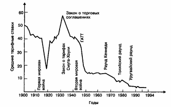
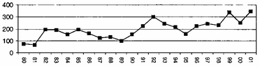
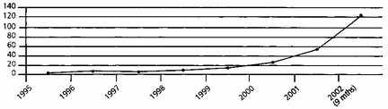
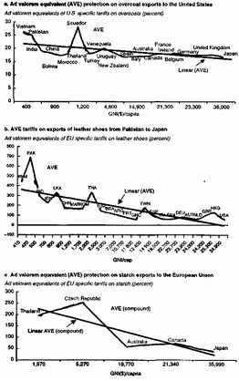
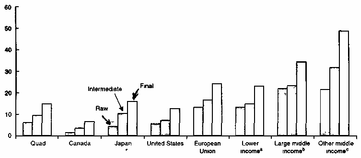
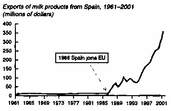

Александр Куряев. Кризис системы ГАТТ/ВТО
Современный протекционизм поменял свое лицо: тарифное регулирование сменилось нетарифным. ВТО переживает глубочайший кризис, связанный с образованием мира почти свободной торговли, надежно охраняемого от развивающихся стран. Идея добиться либерализации торговли путем многосторонних переговоров полностью провалилась.
В качестве важнейшей цели российского правительства в области внешней торговли декларируется скорейшее вступление в ВТО. Учрежденная в 1995 г., Всемирная торговая организация стала наследницей Генерального соглашения по тарифам и торговле, в рамках которого с 1947 по 1993 г. было проведено восемь раундов многосторонних переговоров, сформировавших современное международное законодательство, в сфере правил обмена товарами и услугами.
Однако термины, в которых описывается цель, на достижение которой направлена деятельность ВТО, вызывает настороженность:
открытая система торговли, базирующаяся на международных согласованных правилах... [1];
открытая и всеобъемлющая основа для торговли и экономических отношений в рамках международных согласованных правил, проводимых в жизнь на многосторонней основе... [2];
система правил и норм, направленных на поощрение открытой и справедливой конкуренции, без каких-либо искажений [3].
Почему-то среди постоянно встречающихся слов "открытая", "справедливая", "базирующаяся на правилах", нигде не удается обнаружить простых и понятных слов: "свободная" и "беспрепятственная".
Настороженность постепенно перерастает в озабоченность, когда узнаёшь, что Соглашение об учреждении ВТО содержит 29 юридических документов, регулирующих мировую торговлю, 25 деклараций, решений и договоренностей на уровне министров и множество многосторонних соглашений с ограниченным числом участников [4]. Важнейшей составляющей современной системы регулирования международной торговли являются также, зафиксированные на 22,5 тыс. страниц национальных тарифных списков, так называемые "уступки", согласованные в ходе Уругвайского раунда между более чем 120 странами.
Как это разительно отличается от формул, которыми обычно описываются условия межрегиональной торговли в пределах отдельных стран. В качестве примера приведем пункт 1 статьи 74 Конституции РФ:
На территории Российской Федерации не допускается установление таможенных границ, пошлин, сборов и каких-либо иных препятствий для свободного перемещения товаров, услуг и финансовых средств.
И наконец, когда заглядываешь просто в оглавление Генерального соглашения по тарифам и торговле 1947 г., на принципах которого построена ВТО, наступает разочарование. Значительная часть статей легализует самые разнообразные протекционистские ограничения:
Статья IV. Особые положения, относящиеся к кинофильмам
Статья VI. Антидемпинговая и компенсационные пошлины
Статья XII. Ограничения в целях обеспечения равновесия платежного баланса
Статья XII. Недискриминационное применение количественных ограничений
Статья XIV. Исключение из правил о недискриминации
Статья XX. Общие исключения
Статья XIX. Чрезвычайные меры в отношении импорта отдельных товаров
Статья XX. Общие исключения
Статья XXI. Исключения по соображениям безопасности.
Таким образом, даже самый поверхностный анализ показывает, что не следует искать за лозунгом "либерализации международной торговли", который часто можно услышать из уст политиков и правительственных чиновников разных стран в связи с деятельностью ВТО, стремления к установлению режима свободной торговли между странами.
Более точно характер ГАТТ и его наследницы ВТО определен в одной официальной брошюре ГАТТ (Aider la croissance mondiale), опубликованной в 1980-х гг., где особо подчеркивалось, что ГАТТ это "не хартия свободной торговли", а механизм сдерживания протекционизма [5]. Именно с этой меркой следует подходить, оценивая результаты, достигнутые ГАТТ, и дальнейшие перспективы ВТО.
Понять проблематику ВТО и конфликты, вскрывшиеся на последней встречи министров стран - членов ВТО в Канкуне, можно только поместив их в исторический контекст создания ГАТТ и ее эволюции.
1. История формирования современной системы регулируемой торговли
О том, что в конечном итоге цель ВТО заключается в том, чтобы предотвратить бесперспективный и саморазрушительный дрейф в сторону протекционизма, прямо говорится в официальных материалах ВТО:
Торговая система ВТО помогает беспрепятственному осуществлению торговли и обеспечивает страны конструктивным и справедливым механизмом для разрешения споров по торговым вопросам, тем самым создавая и укрепляя международную стабильность и сотрудничество.
Ярким примером влияния торговли на международную безопасность является торговая война 1930-х годов, когда страны соревновались в возведении протекционистских торговых барьеров. Это усугубило Великую депрессию и в конечном счете сыграло определенную роль в развязывании Второй мировой войны.
Система ГАТТ/ВТО, в которой соглашения заключаются путем консенсуса в результате переговоров и правила соглашений неукоснительно выполняются, также является важным инструментом укрепления доверия. Когда правительство уверено в том, что другие страны не поднимут свои торговые барьеры, у него не возникает искушения сделать то же самое. Государства также будут гораздо более расположены к сотрудничеству друг с другом, и это позволит избежать ситуаций, подобных торговой войне 1930-х гг. [6]
Ночным кошмаром архитекторов послевоенного экономического порядка, стали последствия, вызванные принятием в 1930 г. в США тарифа Смута-Хоули. Именно здесь корни современного международного регулирования мировой торговли.
1.1. Тариф Смута-Хоули - memento mori международной торговли
После окончания Первой мировой войны американские деловые круги боялись, что Америку наводнит продукция дешевого европейского труда: Европа лежала в руинах, многие страны были обременены огромными долгами, безработица была ужасной.
Интересно, что, несмотря на звучащие со всех сторон призывы к протекционизму, президент Вудро Вильсон в марте 1921 г., всего за несколько недель до передачи дел следующему президенту Уоррену Гардингу, наложил вето на законопроект, предусматривавший значительное повышение пошлин. Вильсон в частности сказал: "Если и было время, когда американцы могли бояться иностранной конкуренции, оно уже миновало. Если мы хотим, чтобы Европа разобралась со своими долгами, как государственными, так и коммерческими, мы должны быть готовы покупать ее продукцию".
Увы, в мае 1921 г., практически сразу после вступления в должность президент Гардинг, подписал Закон о чрезвычайном тарифе, направленный на защиту фермеров, за которым последовал Закон о тарифе Фордни-Маккамбера 1922 г. Подписанный президентом 19 сентября тариф 1922 г. установил самые высокие ставки таможенных пошлин в истории страны. Пошлины на некоторые виды продукции достигали 400%. Тариф привел к широкомасштабной торговой войне с Европой, однако на протяжении 1920-х гг. Америка наслаждалась беспрецедентным процветанием. Уже тогда австрийские экономисты Л. Мизес, Ф. Хайек, Ф. Махлуп и др. указывали на то, что видимость процветания создано кредитной экспансией американского центрального банка - Федерального резерва - и неизбежно закончится кризисом (который и последовал в октябре 1929 г.) [7], однако когда в 1928 г. подошло время президентских выборов, республиканцы, оценивая экономическое положение в стране, пришли к заключению, что высокие пошлины сработали и сделали их одним из главных тезисов партийной платформы. Демократы также поддерживали таможенные пошлины, т.к. в экономике Юга постепенно увеличивалась доля промышленного производства.
Поэтому как только президент Герберт Гувер вступил в должность в марте 1929 г. в Конгрессе сразу началась работа над новым тарифом. Таким образом, проект нового тарифа начал свое путешествие по комитетам Конгресса задолго до того, как был принят 30 июня 1930 г. [8]
Первоначально Закон Смута-Хоули был внесен в целях содействия только сельскохозяйственному сектору (Гувер хотел лишь выполнить свое обещание в случае избрания президентом повысить пошлины на продукцию сельского хозяйства). Однако при прохождении законопроекта через Конгресс высокие пошлины были также установлены на импорт промышленных товаров: выступая с показаниями перед Конгрессом промышленники и другие группы организованных интересов активно требовали защиты от иностранных конкурентов. В результате пошлины были повышены на 12 000 видов товаров. На 70 видов сельскохозяйственной продукции и 900 промышленных товаров они были установлены на максимальном за всю историю Америки уровне. Средний уровень пошлин достиг 59%, самый высокий показатель с 1830 г. Всего дважды в истории США пошлины приближался к уровню тарифа 1930 г.
Обеспокоенные правительства 38 стран выступили с официальными протестами, предупредив, что в случае принятия этого закона они введут ответные меры против американских товаров. 1028 американских экономистов подписали петицию в адрес Гувера с просьбой не подписывать законопроект. Описывая пагубные последствия этого шага, они указывали на то, что таможенные ограничения повысят стоимость товаров для потребителей, разрушат экспортную торговлю, ударят по фермерам, будут поощрять неэффективность внутренних производителей, вызовут ответные меры со стороны других стран.
В июне 1930 г., когда президент Гувер уже давно решил, что подпишет повышение тарифа, к нему на прием пришла делегация епископов и банкиров просить о расширении общественных работ в целях оживления экономики. Президент ответил им: "Господа, вы опоздали на 60 дней. Депрессия закончилась". 16 июня в газетах было опубликовано его заявление о том, что он подпишет законопроект, чтобы помочь предприятиям, пострадавшим от спада.
Правительства других государств были в ярости. Историк Ричард Хофштадтер назвал закон о тарифе "фактическим объявлением экономической войны всему остальному миру". В течение двух лет более 40 стран приняли ответные меры [9] в виде значительного повышения собственных тарифов, нанеся мощный удар по американской внешней торговле. Всего через год американский импорт уменьшился на 29%, а экспорт и того больше - на 33%. В 1929 г. американский экспорт составлял 5,5 млрд долл., а в 1932 г. - всего 1,7 млрд долл. Прежде Америка экспортировала более 20% производимой пшеницы, 55% хлопка, 40% табака и топленого свиного жира, а также множество другой сельскохозяйственной продукции. Когда международная торговля оказалась разрушенной, сельское хозяйство США рухнуло вслед за ней. Перед кризисом 1929 г. биржевые цены на сельскохозяйственную продукцию значительно превышали базовые 100 пунктов 1926 г., а к лету 1932 г. они упали до 47 пунктов. Сотни тысяч фермеров разорились. Фермеры лишались заложенной недвижимости, пока различные штаты не ввели законодательный мораторий на выплаты по закладным, что привело к банкротству бесчисленного количества кредиторов [10].
По расчетам Марио Кручини и Джеймса Кана тариф Смута-Хоули в конечном итоге вызвал снижение ВНП США на 2% в течение1930-х гг. Для сравнения, историки оценивают вклад железных дорог в экономический рост в США в 5%. Другими словами тариф Смута-Хоули за два-три года уничтожил половину результатов, созданных железными дорогами за 50 лет! [11]
Большинство историков пришли к выводу, что тариф Смута-Хоули, породив волну протекционизма во всем мире, что привело к коллапсу международной торговли, стал одной из главных причин, сделавших депрессию 1930-х гг. Великой [12].
Архитекторы послевоенного миропорядка попытались извлечь уроки из недавнего прошлого, попытавшись ограничить возможные проявления экономического национализма, выражающиеся в первую очередь в протекционизме, и предотвратить возобновление экономической войны, дважды в течение полувека, приводившей к кровавым мировым войнам.
Уже составители Устава ООН максимально учли губительный исторический опыт и включили в Устав большое число положений, касающихся экономического порядка. Выдвигая экономическое сотрудничество в качестве одной из целей и одного из принципов ООН (ст. 1, п. 3), прямо исходя из принципа экономического добрососедства государств (ст. 55), Устав недвусмысленно утверждает экономические основы мира. Разве объявляют войну своим основным торговым партнерам? [13]
1.2. Роль США в формировании послевоенной системы регулируемой международной торговли
Чтобы повернуть вспять тенденцию резкого сокращения мировой торговли, Конгресс США при новой администрации Рузвельта принял Закон о торговых соглашениях 1934 г. Основные принципы, заключенные в нем, оставались основой для всех последующих торговых законодательств в США. Закон передал функцию разработки торговой политики от более политизированного Конгресса в ведение президента, наделив его полномочиями вести переговоры с другими странами о взаимном сокращении тарифов в пределах более, чем 50 процентов от ставок, установленных в соответствии с Законом о тарифах Смута-Хоули. К 1945 г. США заключили 32 двусторонних соглашения о сокращении тарифов.
Закон о торговых соглашениях продлевался общим числом 11 раз до того, как он был заменен в 1962 г. Законом о расширении торговли. К 1947 г. средний уровень импортных пошлин в США был на 50 процентов ниже уровня 1934 г.
После Второй мировой войны протекционизм был повсеместным. Предвоенные тарифы и импортные квоты были дополнены мерами военного времени, такими, как валютное регулирование. В промышленно развитых странах тарифы на промышленные товары в среднем составляли 40%; в США средний тариф равнялся 18% с пиковыми ставками до 50% [14]. В 1945 г. правительство США выступило в двумя инициативами, преследующими цель либерализации международной торговли:
международный торговый договор, известный как Гаванская хартия, представлявшей собой устав Международной торговой Организации (МТО), и
торговые переговоры, в которых изначально приняли участие 15 стран.
Международная торговая организация, новое специализированное учреждение Организации Объединенных Наций, участниками которого планировали стать 50 стран, должна была стать третьим институтом международного экономического сотрудничества в дополнение к Бреттон-Вудским институтам: Мировому банку и Международному валютному фонду. Проект устава новой организации был весьма амбициозен. Предполагалась, что он будет охватывать не только правила мировой торговли, но и правила, касающиеся вопросов занятости, товарно-сырьевых соглашений, ограничительной деловой практики, международных инвестиций и услуг. И хотя устав был в концов окончательно одобрен, 23 участника уже в 1946 году решили начать переговоры по сокращению и связыванию таможенных тарифов. Они стремились ускорить процесс либерализации торговли после Второй мировой войны и начать отказываться от наследия тридцатых годов: обременительного для мировой торговли груза протекционистских мер. Этот первый раунд привел к тому, что договаривающиеся стороны - основатели ВТО сделали 45 тыс. тарифных уступок, затрагивающих оборот на общую сумму в 10 млрд долл., что коснулось примерно одной пятой мировой торговли. В процессе переговоров также была достигнута договоренность, что цена этих уступок должна обеспечиваться досрочным и в значительной степени "временным" принятием некоторых из торговых правил, которые излагались в проекте устава МТО. Правила и список тарифных уступок каждой из договаривающихся сторон вместе стали известны как Генеральное соглашение по тарифам и торговле, которое вступило в силу в январе 1948 г. [15]
Хотя Устав МТО был окончательно согласован на Конференции ООН по торговле и занятости, которая проходила в Гаване в марте 1948 года, ряд государств не смогли обеспечить его ратификацию своими национальными законодательными органами. Когда правительство Соединенных Штатов Америки заявило в 1950 г., что оно не будет стремиться к ратификации Гаванского устава в Конгрессе, стало ясно, что МТО тихо скончалась. Конгресс США отказался ратифицировать Гаванскую хартию на том основании, что она преследовала цель создания системы экономического планирования и регулируемой, а не свободной торговли.
Гаванская хартия представляла собой компромисс между двумя школами экономической мысли, доминирующих в двух наиболее экономически мощных после окончания Второй мировой войны государств: между либерализмом США и кейнсианством Великобритании. Кейнсианство не разделяет положения либерализма о том, что рыночный механизм является средством самопроизвольного восстановления равновесия экономики. В Гаванской хартии было заложено оба подхода: не мешать игре рыночных сил в период равновесия, вмешиваться в игру, когда равновесие нарушается. О влиянии кейнсианства говорит то, что первая и вторая главы хартии посвящены вопросам занятости и экономики, в то время как торговле - четвертая [16].
В итоге, 1 января 1948 г. в качестве временной меры вступило в силу усеченная версия Гаванской хартии - Генеральное соглашение о тарифах и торговле. Однако, если не считать сокращения тарифов, достигнутого при подписании соглашения, в 1950-е гг. никаких существенных успехов достигнуто не было. И это не случайно. В 1950-х гг. Конгресс США принял серьезные протекционистские поправки в процессе периодического продления Закона о торговых соглашениях:
1. Оговорка пределов снижения импортных пошлин, которая препятствовала обсуждению президентом США любых сокращений тарифов, способных нанести серьезный ущерб внутренним отраслям.
2. Оговорка возможности отказа, позволяющая любой внутренней отрасли, пострадавшей от импорта, направить петицию в Международную торговую комиссию (Комиссия по тарифам США до 1975 г.), которая затем может рекомендовать президенту США отозвать любое соглашение по сокращению тарифов. Возрастающая доля импорта в объеме потребления продукции отрасли являлась достаточным "доказательством" вреда для отрасли.
3. Оговорка национальной безопасности, которая препятствовала сокращению тарифов (даже если достигнуто соответствующее соглашение), когда они могут нанести ущерб отраслям, важным для обороны страны.
Так как значительное сокращение тарифов обязательно отрицательно сказывается на некоторых отраслях (тех, в которых страна не имеет сравнительного преимущества), эти торговые ограничения (в особенности оговорка возможностей отказа) представляют серьезное препятствие для большего сокращения тарифов.
Принятие Конгрессом Закона о расширении торговли от 1962 г., заменившего Закон о торговых соглашениях, в первую очередь было связано с новой ситуацией, созданной образованием ЕС или Общего рынка. Впервые ЕЭС приняло участие в переговорах под эгидой ГАТТ от лица стран-участниц во время предыдущего раунда Дилона (1960-1962 гг.). Закон о расширении торговли от 1962 г. уполномочил президента вести переговоры о сокращении тарифов между странами вплоть до 50 процентов от их уровня 1962 г. (и полностью отменять пошлины, которые составили 5 процентов или меньше в 1962 г.). Это заменило принцип "товар за товар", использовавшийся в Законе о торговых соглашениях. После вступления в силу Закона о расширении торговли 1962 г. США инициировали широкомасштабные многосторонние торговые переговоры под эгидой ГАТТ, которые стали известны, как Раунд Кеннеди.
Закон о расширении торговли 1962 г. был заменен Законом о торговой реформе 1974 г., который уполномочил президента во-первых, вести переговоры о сокращении тарифов вплоть до 60 процентов и отмене тарифов в размере 5 процентов и ниже, и, во-вторых, вести переговоры о сокращении нетарифных торговых барьеров. Закон также смягчил критерии помощи в адаптации.
Руководствуясь правами, предоставленными Законом о торговой реформе 1974 г., США принимали участие в многосторонних переговорах по тарифам, известных как Токийский Раунд.
После Закона о торговой реформе 1974 г. последовал Закон о Торговле и Тарифах 1984 г. Именно с учетом положений этого закона, США призвали к новым многосторонним торговым переговорам (Уругвайский Раунд), которые начались в 1986 г.
Таким образом, судьба послевоенной системы регулирования международной
торговли была неразрывно связана с внутренней политикой США.
Не стало исключением и учреждение в 1994 г. Всемирной торговой организации (ВТО). Ратификация результатов Уругвайского раунда, частью которых было создание ВТО, происходила в обстановке разброда и шатания в Конгрессе после выборов 1994 г. Впервые за 40 лет республиканцы одержали решительную победу, получив большинство в обеих палатах Конгресса, что делало перспективы ратификации торгового договора, заключенного в результате Уругвайского раунда весьма неопределенными. Президент Клинтон пошел на отчаянные меры, чтобы обеспечить его утверждение Конгрессом. В отличие от других договоров, требующих утверждения в Сенате двумя третями голосов, для ратификации пакта о создании ВТО достаточно было простого большинства. Клинтон созвал специальную сессию Конгресса с единственной целью - провести закон о ВТО в рамках этой extra-конституционной процедуры.
Республиканцы столкнулись с дилеммой. Они могли:
а) отложить голосование по ВТО до того момента, когда вновь избранные конгрессмены приступят к своим обязанностям, позволив им нанести нокаутирующий удар уже и без того униженной администрации Клинтона; и
б) утвердить ВТО, поддавшись нажиму лоббистов от крупного бизнеса, и поставить это себе в заслугу.
В конце концов был выбран второй вариант и ВТО получила путевку в жизнь [17].
1.3. Итоги функционирования ГАТТ
Рапортуя о успехах ГАТТ, международные чиновники от торговли прежде всего обращают внимание на тысячи взаимных уступок, позволивших снизить пошлины в среднем с 40% в 1947 г. до 4% в настоящее время и росте оборота международной торговли за это время в 25 раз (см. табл. 1).
Таблица 1
|
Годы |
Место / Раунд |
Количество стран |
Вопросы |
Достижения |
|
1947 |
учредительные переговоры Женева (Швейцария) |
23 |
Тарифы |
заключено 122 соглашения о сокращении тарифов; сделано 45 000 уступок, охватывающих 1/5 мировой торговли того времени |
|
1949 |
Аннеси (Франция) |
13 |
Тарифы |
5000 дополнительных уступок |
|
1951 |
Торкве (Англия) |
38 |
Тарифы |
8700 дополнительных уступок. Тарифы снижены на 25% от уровня 1948 г. |
|
1955-1956 |
Женева |
26 |
Тарифы |
Тарифные уступки, касающиеся 2,5 млрд долл. Торговли |
|
1960-1962 |
Женева Раунд Диллона |
26 |
Тарифы |
4400 тарифных уступок, касающихся 4,9 млрд долл. Торговли |
|
1964-1967 |
Женева Раунд Кеннеди |
62 |
Тарифы |
Сокращение тарифов в размере 35-40%. Соглашение по антидемпинговым мерам |
|
1973-1979 |
Женева Токийский раунд |
102 |
Тарифы, нетарифные меры |
Тарифные уступки, касающиеся 300 млрд долл. торговли. Шесть кодексов по нетарифным мерам |
|
1986-1994 |
Женева Уругвайский раунд |
123 |
Тарифы, нетарифные меры, правила, услуги, интеллектуальная собственность, споры, текстиль и одежда, сельское хозяйство. |
Тарифные уступки, создание ВТО, Соглашения по сельскому хозяйству и текстилю и одежде, ограничение субсидий |
Однако при этом обычно умалчивается о развивавшихся параллельно негативных тенденциях, которые сводили на нет все, что было достигнуто на переговорах, что в конечном итоге привело к тому, что Уругвайский раунд по сути дела не привел к дальнейшей либерализации торговли (см. п. 5.1-5.6) и если бы не создание ВТО, то, вероятнее всего, послевоенную систему регулируемой торговли ожидал бы неминуемый крах.
1.3.1. История ГАТТ: замена тарифного протекционизма нетарифным
В послевоенной истории международной торговли можно выделить два этапа:
1) от создания ГАТТ до конца 1960-х-начала 1970-х гг., когда тарифы и в некоторой степени нетарифные барьеры снижались;
2) с начала 1970-х гг., когда параллельно со снижением тарифов расширялось применение нетарифных барьеров. Доля торговли США, ЕС и Японии, регулируемая нетарифными барьерами, увеличилась с 25% в 1965 г. до 48% в 1986 г. [18] Во всем мире новый протекционизм отменил значительную часть либерализации, достигнутой в предыдущие десятилетия.
Почему рост нетарифного протекционизма начался именно в начале 1970-х гг. Это можно объяснить следующим образом. Во время первого, учредительного раунда ГАТТ, проходившего сразу после окончания Второй мировой войны, было достигнуто значительное снижение пошлин и в течение более чем 10 лет положение оставалось относительно стабильным (см. рис. ...). До середины 1960-х гг. снижение пошлин в рамках ГАТТ было постепенны. Экономическое восстановление Европы от послевоенной разрухи происходило после этого снижения тарифов, так что размещение производства и потоки международной торговли сформировались с учетом существующих тарифных барьеров. В результате раунда Кеннеди вновь произошло резкое снижение тарифов и структура мирового производства должна была адаптироваться к новой ситуации. Однако любые резкие изменения вызывают недовольство со стороны отраслей, вынужденных сворачиваться из-за неожиданного появления зарубежных конкурентов, что заставляет политиков, не понимающих пагубности протекционизма или просто заботящихся только о своей политической судьбе, идти у них на поводу.

Рис. 1. Средние тарифные ставки в США на облагаемый пошлиной импорт 1900-1994 гг.
Источник: Сальваторе Д. Международная экономика. М., 1998. С. 261.
В то время как в ходе Токийского раунда велись переговоры о сокращении тарифных барьеров, те же самые страны стали все чаще использовать гораздо более непрозрачные и опасные для международной торговли нетарифные барьеры. После окончания Токийского раунда либерализации торговли новый протекционизм стал доминирующей тенденцией в торговой политике. Пять новых кодексов поведения - по субсидиям и компенсационным пошлинам, по таможенной оценке товаров, по техническим барьерам, по лицензированию и по государственным закупкам, плюс новый антидемпинговый кодекс - не смогли остановить или хотя бы замедлить распространения и злоупотребления нетарифными мерами ограничения импорта. Что неудивительно - ведь они фактически легализовали эти формы протекционизма.
Расширялась практика дискриминации торговых партнеров, торговые споры возбуждались и разрешались вне юридических рамок ГАТТ и зачастую прямо противоречили ее правилам (так называемые "добровольные" экспортные ограничения). Сфера разногласий между крупными странами расширилась и теперь охватывала не только торговлю промышленной продукцией, но и услугами. Споры между США и Европой по поводу субсидирования сельскохозяйственной экспорта достигли точки кипения. По мнению многих наблюдателей, в середине 1980-х гг. мировой порядок в области международной торговли находился на грани распада [19]. К началу 1980-х гг. объем мировой торговли застыл на одном уровне и даже сокращался на протяжении нескольких лет.
В 1980-х гг. в рамках ГАТТ не было достигнуто никаких соглашений о сокращении тарифов [20]. С другой стороны страны активно использовали легализованные в ходе Токийского раунда протекционистские меры: в 1981-1990 гг. США 802 раза прибегали к защитным и компенсационные пошлинам, антидемпинговым мерам, Австралия - 502, Канада - 474, ЕЭС - 422 раза.
Для более адекватного понимания функционирования послевоенной системы регулируемой торговли и ее будущего необходимо анализировать, не только достигнутые результаты, но и процесс их достижения: как обсуждалась повестка переговоров, какие вопросы в нее были включены, почему какие-то вопросы не удалось вынести на переговоры, по каким вопросам переговоры провалились. Так, например, Во время раунда Кеннеди не удалось достичь прогресса в области внутренних субсидий и государственной помощи, во время Токийского раунда камнем преткновения стали квоты и защитные меры. Уругвайский раунд - вообще отдельная история.
Сама повестка переговоров Уругвайского раунда является приговором всей послевоенной системе регулируемой торговли. На первых раундах обсуждался один-единственный вопрос - тарифы. Сравните это с 15 вопросами Уругвайского раунда:
Тарифы
Нетарифные барьеры
Сырье (природные ресурсы)
Текстиль и одежда
Сельхозпродукция
Тропические продукты
Статьи ГАТТ
Кодексы "токийского" раунда
Антидемпинговые меры
Субсидии
Интеллектуальная собственность
Инвестиционные меры
Урегулирование споров
Система ГАТТ
Услуги
Только согласование этой повестки заняло четыре года и сопровождалось чередой встреч, раз за разом заканчивавшихся провалом. Сам раунд - семь с половиной лет "мучительных", по определению наблюдателей, переговоров - несколько раз прерывался из-за непреодолимых разногласий и продолжался на три года дольше первоначально запланированного срока. Учитывая неопределенные результаты реализации договоренностей, достигнутых в ходе Уругвайского раунда (см. п. 5.1-5.6), нельзя сказать однозначно, а привел ли он к какой-либо либерализации торговли. Утверждение, что единственным его результатом стало создание ВТО, окончательно легализовавшей многие виды протекционизма, что привело к усилению протекционизма в мире в последние годы, вовсе не выглядит сильным преувеличением.
1.3.2. Размывание принципов ГАТТ
С середины 50-х годов XX века началась дезинтеграция системы ГАТТ. В 70-х годах ее развитие ускорилось по причине,
во-первых, серьезных исключений из правового режима ГАТТ и,
во-вторых, заключения секторальных соглашений, касающихся отдельных сфер торговли.
Первое расслоение режима произошло в 1955 году, когда ГАТТ предоставило Соединенным Штатам право на значительное отступление от норм ГАТТ (waver), разрешающее ограничивать импорт сельскохозяйственных товаров. В результате этого исключения торговля сельскохозяйственными товарами практически вышла из сферы регулирования в системе ГАТТ. В течение всего периода своего существования ГАТТ довольно широко использовало свои полномочия, предусмотренные на случаи исключительных обстоятельств, и в 115 случаях предоставило договаривающимся сторонам право на отступление от правил ГАТТ.
Кроме того, и что еще более важно, дезинтеграцию правового режима ГАТТ ускорила практика заключения под эгидой ГАТТ (если не с его благословения) ряда секторальных соглашений. Началось все с текстильного сектора торговли в 1961 году, приведшего к заключению в 1974 г. Соглашения по мультиво-локнам. А далее регулярно следовали такие специфические соглашения, которые содержали механизмы, полностью противоречившие букве и духу ГАТТ, вроде двусторонних соглашений о добровольном ограничении экспорта.
Явление расслоения правового режима усилилось в 1970-х годах на переговорах Токийского раунда, в результате которых было заключено множество отдельных соглашений, названных кодексами. Каждое из этих вспомогательных соглашений было принято, как правило, очень небольшим числом договаривающихся сторон ГАТТ. Ни в одном из них никогда не участвовало более трети государств-участников ГАТТ. Всего в рамках ГАТТ фактически было заключено около сотни вспомогательных соглашений. Каждое такое соглашение в той или иной степени легализовало то или иное отступление от принципов ГАТТ.
1.4. ВТО: неуслышанное пророчество
Создание ВТО было поддержано даже многими сторонниками свободной торговли в классическом смысле, такими, как Heritage Foundation, Cato Institute, National Bureau of Economic Research и др. Резко против новой организации выступали только Competitive Enterprise Institute и Mises Institute. Президент последнего Луэллин Рокуэл писал в феврале 1994 г.: "То, что представляется шагом в правильном направлении - к большей свободе межграничной торговли - окажется прыжком в пропасть мирового этатизма" [21]. Сформулированные им Шесть причин против ВТО, спустя 10 лет в точности описывают основные линии конфликтов, парализовавших в настоящий момент многосторонние переговоры по дальнейшей либерализации торговли:
1. Мировой банк и Международный валютный фонд продемонстрировали свой разрушительный характер; их торговый аналог будет препятствовать торговле, а не способствовать ее либерализации.
2. ВТО укореняет и расширяет "антидемпинговое" регулирование и другие нетарифные барьеры на пути свободной торговли, более опасные, чем тарифы, которые ВТО то ли сможет, то ли не сможет снизить.
3. Принцип большинства голосов, лежащий в основе ВТО, и право на ответные действия приведут к увеличению числа судебных тяжб, репрессалий и споров по сравнению с существующей системой.
4. Данная ВТО власть в области правоприменения нарушает американский принцип федерализма и постепенно разрушит то, что осталось от автономии штатов и местных органов власти в области экономической политики.
5. Глобальные полномочия ВТО будут использованы для продвижения философии большого правительства: полной занятости, фискального стимулирования спроса, устойчивого развития и перераспределения богатства.
6. ВТО - троянский конь со стороны ряда назойливых соглашений в области охраны окружающей среды и повестки "прав трудящихся" Международной торговой организации.
2. Итоги первого 10-летия: протекционизм в рамках ВТО
достиг рекордного уровня
К 2001 г. окончательно сформировалась глобальная тенденция к усилению легализованных в рамках ВТО мер ограничения импорта: антидемпинговых разбирательств, ответных мер на субсидирование иностранными правительствами своих экспортеров, а также так называемых защитных мер.
Согласно правилам ВТО существует три вида легальных барьеров:
антидемпинговые разбирательства,
ответные меры на субсидирование иностранными правительствами своих экспортеров и
защитные меры.
В 2001 г. глобальный торговый протекционизм достиг беспрецедентного уровня. В течение этого года было инициировано рекордное количество антидемпинговых и защитных расследований, а количество дел, возбужденных в связи с предоставлением иностранными правительствами экспортных субсидий своим экспортерам уступило только рекордному 1999 г.
2.1. Антидемпинг
ВТО разрешает вводить антидемпинговые пошлины при установлении факта так называемого демпингового импорта - по цене ниже его нормальной стоимости, когда экспортная цена данного товара, экспортированного из одной страны в другую, ниже сравнимой цены, устанавливаемой в рамках обычного хода торговли на аналогичный товар, предназначенный для потребления в экспортирующей стране.
После создания ВТО антидемпинговые пошлины стали самым популярным средством ограничения международной торговли. За последние три года в среднем возбуждалось более 300 антидемпинговых разбирательств в год по сравнению с 232 в 1990-е и 139 в 1980-е годы. Наиболее активно этим инструментом пользовались США и Индия, далеко опережая ближайших преследователей. Происходит рост среднего числа стран, вовлеченных в одно антидемпинговое расследование.
Все это свидетельствующее о злоупотреблении антидемпинговыми расследованиями в качестве защитных мер.
При оценке опасности антидемпинговых пошлин для международной торговли следует учитывать, что средние антидемпинговые пошлины в десять раз выше тарифов промышленных стран и в пять раз выше, чем в развивающихся странах.

Рис. 2. Антидемпинговые расследования, инициированные в 1980-2001 гг.
2.2. Компенсационные пошлины (в ответ на субсидирование экспорта)
ВТО разрешает вводить компенсационные пошлины в случае нанесения субсидируемым экспортом ущерба отрасли промышленности страны-импортера. Сложная классификация субсидий, размытость формулировок и неполная определенность процедур позволяет вводить ответные меры практически на любую субсидию. Эта возможность активно используется странами-членами ВТО.
В 2001 г. начато 27 расследований, связанных с субсидированием (больше, чем в 2000 г. - 16, но меньше в рекордном 1999 г. - 40).
26 расследований инициировано параллельно с возбуждением антидемпинговых расследований. Можно предположить, что компенсационные пошлины используются главным образом в качестве дополнительного "оружия" к антидемпинговым претензиям.
В 2001 г. самое большое число компенсационных пошлин также приходится на США; на втором месте ЕС.
Следует принимать во внимание две особенности расследований, связанных с субсидированием:
1. Их большую политическую чувствительность в связи с тем, что предметом расследования является не только отрасль, но и действия правительства страны-экспортера (в отличие от антидемпинговых расследований, где предметом расследования является только первое).
2. Методология расчета субсидий еще не устоялась, в отличие от расчета величины демпинга.
2.3. Защитные меры
Самым удивительным легальным протекционистским механизмом ВТО является соглашение по защитным мерам, дающее право фактически приостанавливать процесс либерализации внешней торговли в случае увеличения импорта того или иного товара до степени, наносящей серьезный ущерб соответствующей отрасли национального производства. Считается, что за оградой защитных пошлин соответствующие отрасли осуществят структурную перестройку и модернизируются. Однако вся двухсотлетняя история промышленного протекционизма свидетельствует о том, что пошлины лишь консервируют сложившееся положение.
Страны постепенно освоили механизм введения защитных пошлин и с 2000 г. начался резкий рост случаев применения защитных мер (см. рис. 3).

Рис. 3. Число начатых расследований с целью применения защитных мер
2.4. Количество споров в рамках ВТО превысило 300
С момента своего создания девять лет назад, к сентябрю 2003 г. ВТО рассмотрела более 300 спорных вопросов в рамках системы урегулирования споров. Для сравнения можно отметить, что предшествующее ей Генеральное Соглашение по Тарифам и Торговле рассмотрело 300 споров за почти пятидесятилетнюю историю своего существования.
Знаменитая система урегулирования споров в рамках ВТО является предметом гордости международной бюрократии. В Соглашении о правилах и процедурах, регулирующих разрешение споров, говорится:
Система урегулирования споров в рамках ВТО является ключевым элементом в обеспечении безопасности и предсказуемости мировой системы торговли.
Увеличение количества споров, разрешаемых в рамках ВТО, чиновники рассматривают как проявление доверия к этому механизму. На наш взгляд это симптом противоречий, по которому можно судить о линиях напряженности в мировой торговле.
В рамках системы урегулирования споров, когда правительство страны - члена ВТО инициирует процесс урегулирования разногласий с правительством другой страны, существует обязательный 60-дневнй период консультаций между спорящими сторонами, прежде чем какая-либо из сторон может обратиться с просьбой создания третейской группы из трех человек для заслушивания обстоятельств дела и вынесения решения. В 100 случаях споры были решены или потеряли актуальность в результате этих обязательных двусторонних консультаций. В отношении еще около 70 споров стороны либо продолжили двусторонние консультации, либо спор не был перенесен в следующую инстанцию. Из 301 спора на сентябрь 2003 г. лишь в 1/3 случаев пришлось создавать третейскую группу. Доклад третейской группы может быть обжалован в Аппеляционном органе ВТО, что произошло с 70% докладов третейских групп. Всего с 1995 г. около 40% жалоб было подано развивающимися странами. Но с 2000 г. развивающимися странами было подано уже почти 60% жалоб.
Подводя итоги первого десятилетия функционирования ВТО, первое, что бросается в глаза, - это активное использование странами-членами всего арсенала разрешенных этой организацией протекционистских мер. Посмотрим теперь на другой аспект деятельности ВТО: как далеко продвинулась дальнейшая либерализация международной торговли за этот срок.
3. Фиаско в Канкуне
10-14 сентября 2003 г. на фешенебельном курорте Канкун в Мексике состоялась Пятая Министерская конференция ВТО.
Министерская конференция (официальное наименование - Конференция на уровне министров государств - членов ВТО) - высший орган ВТО, который собирается не реже чем раз в два года. На ней представлены все государства - члены ВТО, как правило на уровне министров торговли или иностранных дел.
Министерские конференции созываются для обсуждения и принятия решений по принципиальным вопросам, связанным с реализацией и расширением соглашений Уругвайского раунда многосторонних торговых переговоров. Министерская конференция имеет право осуществлять все без исключения функции ВТО и принимать любые решения, связанные с функционированием организации, в том числе со всеми вопросами, являющимися предметом хотя бы одного из многосторонних отношений.
Переговоры в Канкуне должны были определить принципы будущих правил Всемирной торговой организации, обсуждение которых началось в ноябре 2001 г. на конференции министров стран-членов организации в Дохе (Катар) и получило название Дохского раунда. Новации должны коснуться сельского хозяйства (сокращение господдержки фермеров, снижение с последующим упразднением экспортных субсидий, снижение тарифов на сельхозпродукцию), услуг и промышленных товаров (упрощение доступа на рынки), антидемпинговых процедур, электронной торговли, а также процедур разрешения споров внутри самой ВТО и принципов развития мировой торговли (улучшение условий доступа на рынки для наименее развитых стран, обеспечение их доступа к современным лекарствам). В повестку Дохского раунда входят также четыре "сингапурских вопроса": регулирование инвестиций, конкуренции, прозрачность при осуществлении правительственных закупок и упрощение торговых процедур (включая таможенный режим). Новые правила планировалось ввести в действие с 2005 г.
Однако сторонам не удалось достигнуть согласия ни по одному вопросу. Конференция закончилась полным провалом. Но для тех, кто внимательно следил за процессом формирования повестки дня конференции, это не стало неожиданностью. Фактически за девять лет существования в рамках ВТО не сделано ничего, чтобы мировая торговля стала свободнее. Из пяти состоявшихся министерских конференций только на трех предполагалось принятие каких-то конкретных решений (см. табл. 1). Из них две (в 1999 г. в Сиэтле и последняя в Канкуне) закончились сокрушительным провалом. Конференция в Дохе в 2001 г. официально завершилась успешно, положив начало новому раунду многосторонних переговоров, но если посмотреть на то, как формировалась повестка дня нового раунда на Четвертой министерской конференции в Дохе (табл. 3) и как велись переговоры между двумя последними министерскими конференциями в 2001-2003 гг., становится очевидным, что канкунское фиаско было неизбежным.
Таблица 2
|
Первая министерская конференция ВТО |
9-13 декабря 1996 г., |
Подтвердила курс стран-участниц на либерализацию торговли и добавила к существующей организационной структуре ВТО три новые рабочие группы, занимающиеся вопросами соотношения между торговлей и инвестициями, взаимодействия между торговлей и политикой конкуренции, а также прозрачностью в области государственных закупок (т.н. Сингапурские вопросы). |
|
Вторая министерская конференция ВТО |
18-20 мая 1996 г., |
Была посвящена 50-летию ГАТТ\ВТО; кроме того, на ней члены ВТО договорились об изучении вопросов мировой электронной торговли |
|
Третья министерская конференция ВТО |
30 ноября - 3 декабря 1999 г. Сиэтл (США) |
Была посвящена ходу реализации государствами - членами ВТО соглашений Уругвайского раунда и определению повестки дня и формата "раунда тысячелетия". Закончилась болезненным провалом: не удалось ни выработать конкретную повестку дня нового многостороннего раунда торговых переговоров, ни даже установить формат его проведения. Причины неудачи стали выявившиеся непосредственно в ходе Конференции не только глубокие принципиальные противоречия между развитыми и развивающимися странами, но и различия стратегических интересов США и ЕС [22]. |
|
Четвертая министерская конференция ВТО |
9-14 ноября 2001 г., |
Принято решение о начале нового раунда многосторонних торговых переговоров, которые должны завершиться не позднее 1 января 2005 г. |
|
Пятая министерская конференция ВТО |
10-14 сентября 2003 г., Канкун, Мексика |
Должна была рассмотреть промежуточные результаты переговоров в рамках нового раунда и принять необходимые решения, корректирующие их ход. |
Таблица 3
Формирование повестки дня нового раунда переговоров на 4-ой Министерской
конференции ВТО (Доха, Катар, 2001 г.)
|
Франция (которую поддерживают некоторые другие члены ЕС) |
отказалась смягчить свою позиции в отношении программы переговоров по сельскому хозяйству, изолировав себя тем самым от остальных 142 членов ВТО. Франция протестует против формулировки проекта программы, которая предполагает ведение переговоров "с целью упразднения в перспективе" всех экспортных субсидий сельскому хозяйству. Окончательный вариант Министерской декларации содержит изменения в части переговоров по сельскому хозяйству, где ЕС под нажимом Франции воспротивился формулировке об ``упразднении экспортных субсидий''. В последнем варианте документа эта фраза сохранена, но в нем уточняется, что прекращение предоставления госсубсидий не обязательно должно рассматриваться как конечная цель этого раунда переговоров. Евросоюз добился-таки изменения в формулировке положений об экспортных сельхозсубсидиях и включения в программу переговоров вопросов о связи правил ВТО и многосторонних соглашений о защите окружающей среды. Оба этих вопроса были очень важны для Франции. Рассматривался вариант "умаслить" Францию достижением больших подвижек в вопросе защиты окружающей среды, за который ратует ЕС. Однако существовала серьезная опасность, что другие правительства могли и не пойти на уступки по этому вопросу. |
|
Бразилия |
13 ноября пригрозила, что, если положение по сельскому хозяйству будет изменено, она заблокирует начало нового раунда. |
|
Страны Африки и Карибско-Тихоокеанского региона |
предупредили, что будут сопротивляться началу нового раунда, если он поставит под угрозу их преференциальные торговые соглашения с ЕС. Совместно с ЕС они пытались добиться сохранения условий соглашений о торговле и развитии (т.н. Соглашений Котону) в ходе дальнейшей либерализации (это соглашение обеспечивает этим странам преференции по сравнению с другими развивающимися странами на рынке стран - членов ЕС). Усилия Евросоюза и 78 стран Африки и Карибско-Тихоокеанского бассейна выторговать для себя исключения из правил ВТО в рамках соглашений Котону о торговле и развитии увенчались определенным успехом. |
|
Некоторые латиноамериканские страны, а также Таиланд и Филиппины |
сопротивлялись сохранению соглашений, желая получить лучшие по сравнению с существующими условия доступа на европейский рынок для своего экспорта - первые - бананов, вторые - тунца. Мнение большинства участников конференции, однако, было таково, что условия Соглашений Котону должны быть сохранены. К утру среды возражения со стороны нескольких латиноамериканских стран производителей бананов были урегулированы, однако Таиланд и Филиппины все еще старались добиться от ЕС получения "услуги за услугу" в виде расширенного доступа на европейский рынок экспорта тунца из этих стран. |
|
Индия |
традиционно является противником начала нового раунда переговоров; осталась единственной страной, которая до конца протестовала против начала нового раунда. Индия успешно отвоевала свою точку зрения о том, что переговоры об инвестициях, конкурентной политике, прозрачности госзакупок и таможенных процедур не должны быть начаты немедленно. Обсуждение этих вопросов, как ожидается, начнется после следующей Министерской конференции ВТО в 2003 году. |
|
Развивающиеся страны |
13 ноября, когда было достигнуто соглашение по спору относительно соглашений ТРИПС, в частности, патентов на лекарственные препараты. |
Главной особенностью встречи в Канкуне (которая, на наш взгляд, теперь будет определять весь дальнейший ход переговоров по мировой торговле) стало то, что впервые развивающиеся страны прибыли на переговоры с хорошо сформулированными и согласованными конкретными переговорными целями. В центре внимания оказались прежде всего проблемы, связанные с торговлей сельскохозяйственной продукцией и так называемыми Сингапурскими вопросами. Первые актуальны не только для стран-экспортеров со средним уровнем доходов на душу населения, таких, как Аргентина, Бразилия и Таиланд, но и для таких бедных стран, как, например, Бенин и Буркина-Фасо. Второй волновал главным образом африканские правительства и наименее развитые страны, а также многие страны с более высоким уровнем развития, такие, как Малайзия.
Бразилия, Индия и ЮАР сформировали коалицию из 21 страны (Группа 21 - G21), которая будет выступать единым фронтом на переговорах с развитыми странами по вопросам сельского хозяйства. Объединившиеся страны назначили по два министра на каждое из трех крупных направлений сельскохозяйственной повестки (внутренняя поддержка, доступ на рынок, конкуренция экспорта) и выступили единым блоком при проведении двусторонних дискуссий, характерных для переговорного процесса в рамках ВТО. В прошлом такие коалиции формировались для решения ограниченных вопросов - формирования повестки или блокирования каких-то вопросов, и никогда не участвовали в реальных переговорах.
Торговый представитель США Роберт Зоеллик пытался расколоть этот альянс, предложив Коста-Рике, Сальвадору и Гватемале увеличить импортные квоты, если они выйдут из коалиции.
Западно-африканские страны - Бенин, Буркина-Фасо, Чад и Нигер - объединились вокруг требования упразднить экспортные и прочие искажающие торговлю субсидии, предоставляемые хлопководам США, ЕС и Китая, с выплатой компенсаций во время трехлетнего переходного периода, в течение которого субсидии будут сведены на нет. Это первый в истории ВТО пример, когда африканские страны выступили с конкретным требованием. В этих странах хлопок является крупной статьей экспорта, а субсидии США и других стран, по некоторым оценкам, приводят к снижению мировых цен на 20-40%. Это предложение получило поддержку других развивающихся стран, а также некоторых стран ОЭСР. Однако, на конференции по этому вопросу не было достигнуто никакого прогресса.
США ежегодно предоставляют 25 тыс. американским фермерам-хлопководам 3,3 миллиарда долларов в качестве субсидий, что превышает рыночную стоимость выращиваемого в США хлопка [23]. Благодаря этому США стали ведущими экспортерами хлопка. При этом 10 млн фермеров в странах Западной и Центральной Африки ежегодно лишаются 1 млрд долларов экспортных доходов из-за того, что субсидированный американский экспорт составляет им конкуренцию и снижает мировые цены. С 1997 по 2002 год цены на хлопок снизились наполовину [24]. На конференции США пытались уговорить африканцев отказаться от своих требований, обещая им вложить американские капиталы в их перспективную текстильную промышленность [25].
По поводу Сингапурских вопросов три группы развивающихся стран прибыли в Канкун с четкой позицией: 78 стран Африки и Карибско-Тихоокеанского региона, группа наименее развитых стран и Африканский союз. Еще до начала конференции все три группы на министерском уровне договорились, что не поддержат начало переговоров по этим темам. В Канкуне к ним присоединились некоторые другие страны.
Кроме того, Индонезия и Филиппины сформировали группу из 33 развивающихся стран для защиты интересов мелких крестьян, а Индия и Малайзия - группу из 16 стран для противодействия переговорам об инвестициях.
Таким образом, впервые за 50 лет переговорного процесса в ГАТТ и ВТО развивающиеся страны ``проснулись'' и пытаются развернуть переговоры в свою пользу, в пользу бедных [26].
Тем временем развитые страны изо всех сил пытались навязать развивающимся странам свою повестку дня - распространение правил ВТО на новые сферы: конкуренцию, экологию, трудовые стандарты и инвестиции, т.е. пресловутые Сингапурские вопросы.
Главное стремление США и ЕС - заставить ВТО сделать обязательными для всех стран-членов действующие в развитых странах экологические и трудовые стандарты, т.е. повысить стоимость труда и издержки на охрану окружающей среды в развивающихся странах, включая наименее развитые страны. За каждым подобным требованием стоит конкретная лоббистская группа, среди которых особое место занимают профсоюзы.
Однако одним из главных сравнительных преимуществ развивающихся стран, позволяющих им привлекать иностранные инвестиции и производить собственные товары на экспорт, как раз и является свободный рынок труда, отсутствие избыточного природоохранного и прочего регулирования. Представители стран третьего мира постоянно повторяют, что введение подобного регулирования станет "поцелуем смерти" не только для их экономик, но и для всего мира. "Они настаивают на установлении минимального уровня заработной платы. Но как можно установить минимальную заработную плату в 4 доллара в Бангладеш, если средняя заработная плата там составляет 20 центов?" - говорит член делегации Пакистана Мунир Ахмад (Munir Ahmad). Выступая за запрещение детского труда, думают ли люди о том, что станет с детьми в беднейших странах, если они лишаться возможности работать. Они либо умрут от голода, либо примкнут к уличным бандам, либо будут вынуждены заниматься проституцией. Имея работу, они зарабатывают себе на еду и одежду, облегчая бремя своим родителям и помогая братьям и сестрам. Как пишет Лу Рокуэл из Mises Institute, "благослови Господи, компании, дающие им работу, и американцев, европейцев и азиатов, покупающих произведенную ими продукцию. Будь прокляты социальные реформаторы, стремящиеся запретить во всем мире детский труд, спасающий жизни, и помешать продуктам этого труда достигать наших берегов" [27].
К тому же, вместо того, чтобы изменить собственную протекционистскую политику и перестать поддерживать производство в неэффективных отраслях, США и Европа с настойчивостью, достойной лучшего применения, пытаются заставить развивающиеся страны ввести у себя патентное законодательство и охрану интеллектуальной собственности, а также снизить ограничения на импорт товаров и инвестиции из развитых стран. В общем-то здесь нет ничего удивительного, ибо с самого начала принцип, лежащий в основе ВТО, заключался в том, что развитым странам нужно найти дополнительные рынки сбыта во всех уголках мира, а не в том, что бедные страны могут продавать что-то понравившееся потребителям из богатых стран.
Самый большой секрет ВТО, маскируемый за низкими средними значениями тарифов, состоит в том, что богатые страны, до недавнего времени пользовавшиеся подавляющим влиянием в ВТО, защищают в своих странах те самые отрасли, в которых развивающие страны обладают наибольшим экспортным потенциалом.
Торговые пошлины между индустриальными странами обычно держатся в районе 2-3%. Если же бедная страна экспортирует в богатую, пошлина возрастает впятеро. Хуже того: самыми высокими пошлинами облагается трудоемкий товар - аграрная продукция, одежда и обувь.
Латиноамериканские фермеры могут с 2%-ной пошлиной экспортировать в США помидоры, и с 12%-ной - томатный соус. Бразилия платит 50%-ную пошлину за концентрированный апельсиновый сок - так защищаются фруктовые фермы во Флориде. ЕС тем временем беспошлинно допускает на рынок масличное семя, но налагает высокие пошлины на обработанные масла из Индонезии и Малайзии. Пошлины на ткани и одежду (с точки зрения рабочих мест - по сей день важнейший производственный экспорт развивающихся стран), варьируются от 15% в Европе до примерно 20% в США. Вот почему в Америке фискальные пошлины на импорт из Бангладеш, одной из беднейших стран мира, сравнимы с пошлинами на импорт из Франции, одной из богатейших стран [28].
Настоящим приговором политике развитых стран в отношении развивающихся и наиболее бедных стран служат следующие цифры:
Высокие тарифы против экспорта промышленных товаров из бедных стран покрывают 63% всех экспортных товаров бедных стран. Высокие тарифы против экспорта сельскохозяйственной продукции из бедных стран охватывают 97,7% их сельскохозяйственного экспорта. К тому же ставки тарифов повышаются по мере углубления переработки даров природы [29].
По мере того, как богатые и бедные страны тщетно пытаются достичь компромисса по целому ряду вопросов - от субсидий производителям сельскохозяйственной продукции до иностранных инвестиций Всемирная торговая организация теряет свою значимость [30].
4. Противоречия между развитыми и
развивающимися странами неразрешимы
4.1. Пиковые тарифы
В результате Уругвайского раунда переговоров в рамках ГАТТ (1986-1994 гг.) и тарифных реформ, проведенных на национальном уровне, средние ставки тарифов во многих странах в настоящее время снизились до сравнительно умеренных показателей. Это привело к широкому распространению мнения о том, что тарифы больше не являются важной проблемой ни для международной торговли, ни для торговли развивающихся стран.
Однако исследование, проведенное в 1997 г. Секретариатами ЮНКТАД [31] и ВТО с целью рассмотрения положения в области тарифов в крупнейших развитых и развивающихся странах после полного осуществления всех тарифных изменений и поэтапной отмены квот, согласованных на Уругвайском раунде, показывает, что проблемы высоких тарифов по-прежнему являются актуальными. Даже после полного закрепления всех "уступок", сделанных на Уругвайском раунде, останется значительное число высоких тарифов, обеспечивающих высокий уровень защиты и затрагивающих международную торговлю, включая экспорт из развивающихся стран.
Особое внимание было уделено пиковым уровням тарифов.
Пиковыми тарифами называются ставки таможенных пошлин, в три и более раза превышающие среднее номинальное значение таможенного тарифа страны. Обычно пиковыми считаются пошлины, превышающие 12-15%.
В исследовании ЮНКТАД/ВТО пиковыми считались уровни адвалорных пошлин, превышающие 12%, которые могут обеспечивать эффективный уровень защиты для внутренних производителей, доходящий до 50%.
Эффективный уровень защиты - процент, на который торговые барьеры увеличивают цену товара (учитывает всю структуру тарифа, не только на конечную продукцию, но и на факторы производства).
Полученные результаты свидетельствуют, что тарифы по-прежнему активно используются в протекционистских целях и их ставки нередко достигают астрономических значений. После вступления в действие всех "уступок", согласованных в ходе последнего раунда переговоров в рамках ГАТТ, примерно 10% адвалорных пошлин стран "четверки" [32] будут по-прежнему превышать 12%. Этот показатель относится к тарифам, фактически применяемым в отношении импорта из развивающихся стран. Иногда, по некоторым важным для развивающихся стран товарам, пиковые уровни их тарифов достигают 350% и более. В большинстве случаев пиковые ставки их тарифов колеблются в пределах 12-30%. В то же время 20% пиковых тарифов США, 25% пиковых тарифов ЕС, приблизительно 30% пиковых тарифов Японии и примерно 14% пиковых тарифов Канады превышает 30%.
Проблема пиковых тарифов отмечается в шести секторах:
а) важнейшие сельскохозяйственные продовольственные продукты первой необходимости;
б) фрукты, овощи, рыба и т.д.;
в) пищевая промышленность;
г) текстильные изделия и одежда;
д) обувь, кожа и товары для путешествий;
е) автомобильная промышленность и некоторые другие транспортные средства и высокотехнологичные товары, такие, как бытовая электронная аппаратура и часы.
В Европейском Союзе из 2726 позиций по Стандартной товарной классификации (СТК), охватывающих продукцию сельского хозяйства и рыболовства, 1273 позиции имели пиковые ставки: 572 - в пределах 12-19%, 334 - 20-29%, 334 - 30-99%, 31 - 100-299% и 2 ставки превышали 300%.
Из 7771 позиции СТК, относящихся к промышленной продукции, на 27 пошлины установлены на уровне 12-19%, 7 - 20-29%, 8 - 30-39%. Транспортное оборудование (184 позиций) дает 15% пиковых тарифов, в группе химических продуктов, пластмассы, резины и изделий из них (1596 позиций) существует 21 пиковый тариф.
Итак, хотя большинство пошлин в развитых странах находятся на низком уровне, некоторые категории товаров облагаются запретительно высокими ставками (порой превышающими 300%! Например, в США пошлина на табак равна 350%).
Пошлины на многие потребительские, сельскохозяйственные и трудоемкие товары в 10-20 раз выше среднего тарифа. Например, в США импортные пошлины на одежду и обувь в среднем составляют 11%, доходя до 48%. Показательно, что в 2001 г. одежда и обувь, составляя в стоимостном выражении 6,5% американского импорта, принесли в бюджет половину из 20 млрд долл. таможенных доходов. Пошлины на обувь приносят больше доходов в бюджет США, чем автомобили (табл. 4).
Таблица 4
Обувь - главный источник таможенных доходов в СШАСША собирает больше пошлин от импорта обуви, чем автомобилей, хотя обувь составляет незначительную долю общего объема импорта |
||
|
Объем импорта, млрд долл. |
Доход от пошлин, млрд долл. |
|
|
Автомобили |
110 |
1,60 |
|
Обувь |
15 |
1,63 |
То же относится и к другим развитым странам. В Европейском Союзе импорт мяса облагается пошлиной в 236%, зерновые - 180%, туфли - 17%. Для сравнения пошлины на сырье и электронику редко превышают 5%.
Больше всего от пиковых тарифов развитых стран страдают развивающиеся страны, экспортирующие главным образом сельскохозяйственную и трудоемкую продукцию. Влияние высоких ставок пошлин можно оценить по отношению уплаченных таможенных пошлин к общему объему ввоза (так называемые эффективные тарифные ставки). Например, в 2001 г. импорт товаров на сумму 2,5 млрд долл. из Бангладеш принес американской казне в виде таможенных пошлин 331 млн долл., а товары и услуги на сумму 30 млрд долл., импортированные из Франции, - всего 330 млн (табл. 5).
Таблица 5
Бедные страны страдают больше всегоСША собирает больше таможенных платежей от |
|||
|
Импорт в США (млрд долл.) |
Уплаченные пошлины (млрд долл.) |
ВВП на душу населения (долл.) |
|
|
Бангладеш |
2,4 |
331 |
370 |
|
Франция |
30,0 |
330 |
24 170 |
4.2. Адвалорные, специфические и комбинированные пошлины
В большинстве стран для защиты рынка как правило применяются адвалорные пошлины. Эта форма защиты является более прозрачной, чем другие виды пошлин - специфические или составные. Таможенная пошлина в размере 10% увеличивает цену импортируемого товара на одни и те 10% будь то автомобиль ценой 20 долл. и велосипед ценой 50 долл. Напротив, влияние специфической пошлины в размере 50 долл. на импорт этих товаров будет различным. Кроме того, влияние специфической пошлины зависит от состояния рынка. Если цена велосипеда провалится до 20 долл., то адвалорный эквивалент специфической пошлины, равной 50 долл., вырастет со 100 до 250%.
Адвалорные тарифные ставки - начисляемые в процентах к таможенной стоимости облагаемых товаров.
Специфические тарифные ставки - начисляемые в установленном размере за единицу облагаемых товаров.
Комбинированные тарифные ставки - представляют собой адвалорную ставку, к которой добавляется или из которой вычитается специфическая ставка.
Смешанные тарифные ставки - ограничивают максимальный или минимальный уровень защиты путем выбора между адвалорной или смешанной ставками.
Технические тарифные ставки - таможенные пошлины, ставки которых определяются при помощи сложных технических факторов, таких, как содержание спирта, сахара или стоимостью импортируемого товара (например, 8,2% + Т1, где Т1 - ставка, рассчитываемая по специальной формуле, основанной на сельскохозяйственном компоненте товара).
Адвалорный эквивалент - адвалорный тариф, который будет эквивалентен с точки зрения влияния на торговлю, цену или по какому-либо иному критерию неадвалорной пошлине или нетарифному барьеру.
Таблица 6
Типы пошлин
|
Тип пошлины |
Функциональная форма |
Пример |
Страна |
|
Адвалорные |
|||
|
Адвалорная |
av = (ставка пошлины/цена единицы импортируемого товара) 100 |
5% |
|
|
Неадвалорные |
|||
|
Специфическая |
sp = ставка пошлины/количество единиц импортируемого товара |
15 франков/100 кг сухого вина |
Швейцария |
|
Комбинированная |
av + sp |
15% + 12000 долл. за ед. |
Австралия |
|
max(av, sp) |
40%, но не менее 622 евро за тонну |
Болгария |
|
|
min(av, sp) |
45%, но не более 55 рупий за кг |
Индия |
|
|
max(av1, av2 + sp) |
4,5%, но не менее 3,5% + 1,21 иен за кв. м. |
Япония |
|
|
Смешанные |
min(av1, av2 + sp) |
7% + 89,4 евро за 100 кг, но не менее 50% |
Хорватия |
|
max(av1 + sp1, av2 + sp2) |
9,1% + 45,1 евро за 100 кг нетто, но не более 18,9% + 16,5евро за 100 кг нетто |
ЕС |
|
|
max(min(av1, sp1) sp2) |
5%, но не более 125 иен за литр, и не менее 67 иен за литр |
Япония |
|
|
av, если sp1 " av1 " sp2 sp1, если av " sp1 sp2, если av " sp2 |
5 процентов, но не менее чем 4,7 центов за кг или не более 9,48 центов за кг |
Канада |
Одной из целей Уругвайского раунда переговоров рамках ГАТТ было обеспечить бульшую прозрачность уровней защиты путем преобразования неадвалорных пошлин в адвалорные. Этой цели добиться не удалось, особенно в промышленно развитых странах. Многие пошлины на сельскохозяйственную продукцию являются специфическими, комбинированными или смешанными. В этих случаях практически невозможно оценить реальный уровень защиты, поскольку она может изменяться с течением времени в зависимости от изменений цен на импорт. Степень защиты, обеспечиваемая специфическими пошлинами, увеличивается при снижении мировых цен (что обычно происходит в периоды экономических спадов).
Значительно более высокая доля тарифных позиций на сельскохозяйственную продукцию, выраженных специфическими, комбинированными и смешанными пошлинами, в богатых странах по сравнению с развивающимися означает, что, кроме всего прочего, бульшую прозрачность сельскохозяйственных тарифов в развивающихся странах выше, чем в развитых.
Таким образом, наличие неадвалорных пошлин в тарифах стран - членов ВТО не позволяет нарисовать полную картину уровня тарифов. Для этого их нужно преобразовать в адвалорные эквиваленты. При расчете адвалорных эквивалентов неизменно оказывается, что адвалорные эквиваленты существенно выше средних адвалорных ставок.
В ЕС средний адвалорный тариф составляет 10,6%, а средний адвалорный эквивалент неадвалорных ставок - 35,2%, при том что доля тарифных позиций, содержащих адвалорные ставки составляет 43,6% (для США соответствующие цифры равны 8,1, 11,7 и 40,4).
Таким образом, для стран с высокой долей неадвалорных тарифов средние величины пошлин значительно занижены.
В общей сложности в Интегрированной базе данных (IDB) ВТО доля неадвалорных тарифных позиций составляет 6,6%. Особо следует отметить Швейцарию, 83% тарифа которой - неадвалорные пошлины.
Больше всего неадвалорных пошлин установлено на сельскохозяйственную продукцию (19% тарифных позиций; сравните всего с 4% на промышленную продукцию). Активнее всего неадвалорные пошлины на продукцию сельского хозяйства устанавливают развитые страны - члены ВТО: Канада (26% тарифных позиций), ЕС (45%), Исландия (25%), Норвегия (63%) и США (43%). В тарифах ряда стран с переходной экономикой доля неадвалорных пошлин на сельскохозяйственную продукцию также высока: Беларусь (33%), Польша (25%), Россия (33%). Среди развивающихся стран выделяются Кипр (50%) и Таиланд (56%). Такая же картина вырисовывается при анализе Базы данных консолидированных тарифов (CTS) [33].
Если сгруппировать тарифные позиции, к которым применяются неадвалорные пошлины, по разделам Стандартной товарной классификации (Harmonized System nomenclature), то окажется, что чаще всего они встречаются в следующих разделах:
мясо и мясные субпродукты (раздел 02);
молочные продукты (раздел 04)
сахар (раздел 17)
какао (раздел 18)
изделия, приготовленные из хлебных злаков, муки, крахмала и молока (раздел 19)
напитки (раздел 22)
текстиль
Очевидно, что, учитывая указанные выше особенности специфических пошлин, специфические пошлины на сельскохозяйственную продукцию, покрывающие в развитых странах большую часть сельскохозяйственной части тарифа, особенно болезненно сказываются на развивающихся странах. Однако и специфические пошлины на некоторые виды промышленной продукции также фактически направлены против развивающихся стран.
Экспортируемые более бедными странами модели промышленных товаров имеют меньшую стоимость за единицу, чем экспортируемые из развитых стран. При повышении уровня развития страны, она начинает экспортировать более совершенные и качественные модели тех же товаров, применяя больше капитала и более квалифицированный труд. Так, к примеру, футболки, экспортируемые Японией, стоят в 20 раз больше, чем футболки, экспортируемые Филиппинами. В такой ситуации специфические пошлины в стране-импортере оказываются гораздо большим бременем для развивающихся стран, чем для развитых [34].
Сравнение влияния неадвалорных пошлин на развитые и развивающиеся страны показывает, что во многих случаях адвалорные эквиваленты одних и тех же специфических тарифов оказываются в разы выше для развивающихся стран, чем для развитых. Так, при импорте в США пошлины на мужские пальто, производимые во Вьетнаме и Эквадоре в два раз выше, чем на пальто производства Японии (рис. 3 а). При импорте в Японию пакистанские кожаные туфли облагаются пошлиной в размере около 700%, тогда как экспорт такого рода товаров из развитых стран (Нидерланды, Великобритания, США) - менее 100% (рис. 3 b). Аналогично, при ввозе в ЕС адвалорный эквивалент пошлины на крахмал из Японии составляет 50%, а ждя экспорта из Таиланда и Чехии - больше 100% (рис. 3 c) [35].

Источник: World Bank. Global Economic Prospects. 2004. P. 89.
Рис. 4. Чем ниже доход на душу населения в стране, тем выше адвалорные тарифы на импорт из этих стран.
Специфические пошлины чаще применяются к товарам с высокой степенью обработки. Например, в Канаде и ЕС доля специфических пошлин на сырье составляет 17 и 22 % соответственно, а на конечную продукцию - 30 и 58 %. Россия облагает специфическими пошлинами 12% импорта сырья и 53% конечной продукции.
Таким образом, структура неадвалорных пошлин развитых стран:
во-первых, используется в качестве скрытого протекционисткого инструмента;
во-вторых, маскирует ярко выраженную тенденцию дискриминации экспорта из развивающихся стран;
в-третьих, доля специфических ставок увеличивается с ростом глубины переработки, что означает скрытую эскалацию тарифа, также направленную против развивающихся стран (см. п. 4.3).
4.3. Эскалация тарифов
Эскалация тарифов имеет давнюю историю, особенно в сфере торговли продукцией сельского хозяйства и пищевой промышленности.
Эскалация тарифа - повышение ставок пошлин по мере увеличения степени обработки товаров.
Экономисты вот уже четверть века регулярно пишут о пагубном влиянии этой практики на мировую торговлю и промышленное развитие развивающихся стран [36]. Когда экспортер сталкивается с эскалацией тарифа, ему проще ограничиться экспортом необработанных товаров или сырья. Тем самым, тарифная эскалация сдерживает развитие обрабатывающих отраслей в экспортирующей стране. Особо ярко это видно на примере пищевой отрасли. В ходе одного из исследований Организации по сельскому хозяйству и продовольствию ООН (FAO) было показано, что эскалация тарифов является одним из главных препятствий для диверсификации экспорта развивающихся стран. Несмотря на то, что пищевая промышленность является крупным экспортером в развивающихся странах, их экспорт как правило ограничен начальными стадиями обработки. Отрасли, производящие продукты питания более глубокой степени обработки составляют всего 5% сельскохозяйственного экспорта наименее развитых стран и 16,6% сельскохозяйственного экспорта развивающихся стран в целом против 32,5% для развитых стран [37]. Таможенная защита увеличивается по мере увеличения степени обработки практически во всех странах по всем видам продукции.
Политика эскалации тарифа проводится всеми группами стран от самых богатых (страны Четверки) до самых бедных (Бангладеш) (рис. 5).

Прим.: а Бангладеш (1999), Гватемала (1999), Индонезия (1999), Кения (2001), Малави (2000), Того (2001), Уганда (2001), Зимбабве (2001).
b Бразилия (2001), Китай (2001), Индия (2000), Корея (2001), Мексика (2001), Россия (2001), ЮАР (2001), Турция (2001).
с Коста-Рика (2001), Венгрия (2001), Иордания (2001), Малайзия (2001), Морокко (1997), Филиппины (2001), Румыния (1999).
Рис. 5. Во всем мире пошлины повышаются с ростом степени переработки.
Средние тарифы как обычно маскируют высокие тарифные пики на отдельные товары. В США, например, максимальные пошлины на конечные стадии переработки фруктов достигают 136%; какао - 186%. В ЕС максимальные ставки пошлин на конечные стадии переработки фруктов и овощей составляют 98 и 146% соответственно, какао - 63%.
Особо неприлично высокие пошлины маскируются специфическими ставками. Не случайно, как указывалось выше, специфические ставки чаще устанавливаются на импорт товаров высокой степени обработки.
Интересно сравнить, что изменилось в результате соглашений Уругвайского раунда. Правительственные чиновники и экономисты из развитых стран любят повторять, что средние тарифы в результате многочисленных "уступок" и "компромиссов", на которые стороны пошли в ходе переговоров, снизились до 3,5-4,0%. Однако проблема не в среднем тарифе, а в эскалации существующей структуры тарифа. Поэтому следует обращать внимание не на уровень пошлин на отдельные товары, а на ставки пошлин, установленные на различных стадиях производства товара.
Если проанализировать структуру тарифа в таком разрезе, мы увидим, что в большинстве случаев эскалация тарифа сохранена. В развитых странах для многих производственных цепочек импорт сырья фактически свободен от таможенного обложения, а продукция более высоких стадий обработки обложена пошлинами, превышающими среднее значение тарифа (например, производственные цепочки, начинающиеся с кожи, дерева, резины, олова).
Данные табл. 7 демонстрируют не только наличие эскалации в структуре тарифов развитых стран, но и направленность тарифов против развивающихся стран: ставки на импорт из развивающихся стран выше средних по тарифу.
Таблица 7
Тарифы в развитых странах
|
Страна |
Сырье |
Полуфабрикаты |
Готовая |
Из стран третьего мира |
|
США |
0,2 |
3,0 |
5,7 |
8,7 |
|
ЕС |
0,2 |
4,2 |
6,9 |
6,7 |
|
Япония |
0,5 |
4,6 |
6,0 |
6,8 |
Более того, после Уругвайского раунда степень эскалации тарифа по отношению к развивающимся странам только усилилась. Тарифы на полуфабрикаты были снижены на 38%, а на готовую продукцию - всего на 23%. Абсолютные ставки на импорт сырья ниже ставок на импорт готовой продукции в 7,7 раза, на импорт полуфабрикатов по сравнению с импортом готовой продукции - в 2,2 раза. Зато как красиво звучит: "В ходе уругвайского раунда тарифы на импорт из развивающихся стран были снижены в среднем на 37%; снижение на различные виды товаров составило от 32 до 62%". Вообще-то это можно назвать мошенничеством - стремлением снижать не снижая. Аналогичные примеры этой стратегии развитых стран по отношению к развивающимся будут рассмотрены ниже (когда, например, снижение тарифа "в среднем" не означает вообще какого-либо снижения (п. 5.1.), а также предоставление преференций наименее развитым и развивающимся странам на любые товары, за исключением тех, которые их больше всего интересуют (п.5.7.)).
4.4. Тарифные квоты
Импортная квота представляет собой прямое ограничение количества товара, разрешенного для ввоза в страну. Применение квот для "защиты" внутреннего рынка преследует те же цели, что и применение пошлин - повышение внутренних цен на защищаемые" товары. Импортная квота всегда увеличивает внутреннюю цену на импортируемый товар. Когда импорт ограничивается искусственным образом, спрос на товар по исходной цене начинает превышать предложение, обеспечиваемое отечественными производителями и импортным поставками, что неизбежно ведет к росту цен. В конечном итоге импортная квота увеличивает внутренние цены на ту же величину, что и пошлина, ограничивающая объем импорта тем же самым уровнем.
Отличие квоты от пошлины заключается в том, что от ее применения государство не получает прямых доходов, получая доходы в виде платы за получение лицензии на право импорта. Владельцы таких лицензий могут покупать импортный товар и затем продавать его на внутреннем рынке по более высокой цене. Прибыли, получаемые владельцами импортных лицензий, называются доходами от использования квоты. При оценке издержек и выгод от использования квоты важно понимать, кто же в действительности получает обеспечиваемый ею доход. Когда права на продажу на отечественном рынке предоставляется правительствам стран-экспортеров, как это часто случается, то перевод доходов от использования квот за границу делает издержки данного типа ограничений более высокими, чем при введении эквивалентной импортной пошлины.
В 1980-х гг. в Гонконге проводился квотный аукцион, на котором частные компании покупали правительственные лицензии на экспорт одежды и текстиля. В некоторых случаях компании тратили больше средств на покупку экспортной квоты, чем на производство наполняющих ее товаров. В 1988 г. стоимость покупки права экспорта в США брюк из хлопка составила 8 долл., а стоимость производства брюк - всего 7 долл. Цена экспортной квоты на шерстяной трикотажный свитер составляла 120% цены самого свитера [38].
В трудный для мировой торговли период первой половины 1980-х гг. квоты являлись одним из главных протекционистских инструментов: в 1985 г. квотированию подвергалось до 50% (!) мировой торговли [39].
Сегодня тарифные квоты используются практически всеми развитыми странами для защиты сельского хозяйства и развивающимися странами для стимулирования производства импортозамещающих промышленных товаров. И хотя количество тарифных позиций, защищенных квотами, относительно невелико, согласно данным Организации Экономического Сотрудничества и Развития (ОЭСР), странах - членах этой организации 28% внутреннего сельскохозяйственного производства защищено тарифными квотами. Доля сельскохозяйственного тарифа, покрываемая квотами изменяется от 68% в Венгрии до 0% в Австралии и Новой Зеландии. В ЕС и США 38 и 26% сельскохозяйственного производства защищены квотами
Тарифные квоты - один из самых непрозрачных инструментов протекционизма. Адвалорные эквиваленты тарифных квот во много раз выше средних значений таможенного тарифа соответствующих стран. Кроме того, в развитых странах квоты как правило устанавливаются на традиционный экспорт из развивающихся стран, являясь еще одним инструментом дискриминации развивающихся стран в мировой торговле.
4.5. Субсидирование производства и экспорта
Государственное субсидирование до сих пор занимает довольно прочное место в арсенале средств защиты, используемых во многих развитых странах. При этом речь идет не только о поддержке национального производства, но и о стимулировании экспорта.
Согласно ст. 87 Римского договора, учредившего ЕС, "государственная помощь несовместима с общим рынком", но, тем не менее, правила ЕС допускают определенные исключения при соответствующем уведомлении Европейской комиссии о планируемых мерах по оказанию поддержки. Так, предоставляется финансовая помощь крупным инвестиционным проектам в автомобилестроении и производстве искусственного волокна (эта помощь увязана с региональной политикой); по соображениям социального характера, а также в рамках содействия региональному развитию принята программа поддержки угольной промышленности, рассчитанная до 2010 г. В частности, в 2000 г. Европейская комиссия утвердила государственную помощь угледобывающим предприятиям в размере 6,8 млрд евро для покрытия, главным образом, операционных убытков, что в среднем составляет 192 евро на 1 т угля. Предполагается, что ежегодная поддержка в таком объеме сохранится как минимум до 2005 г. Вместе с тем Европейская комиссия по-прежнему запрещает государственную поддержку инвестиционных проектов и реструктуризации в сталелитейной промышленности, разрешая лишь государственное финансирование мер по охране окружающей среды и проведения НИОКР. В 2000 г. на эти цели было выделено 5,2 млн евро.
В судостроении государствам разрешается оказывать региональную помощь по модернизации судоверфей, по покрытию расходов, связанных с их закрытием, по спасению и реструктуризации находящихся в бедственном положении предприятий и по финансированию затрат на НИОКР и на меры по защите окружающей среды. Отметим, что помощь, которую в ряде стран ЕС государство издавна оказывает судостроительной и судоремонтной промышленности, серьезно затрагивает интересы третьих стран и вызывает их раздражение. Формы этой помощи разнообразны: субсидирование реструктуризации национального судостроения, выделение прямых и косвенных субсидий на пополнение оборотного капитала и инвестиционные проекты, внутреннее кредитование, предоставление субсидированных экспортных кредитов и государственное владение верфями.
В настоящее время ЕС под давлением третьих стран вынужден заявлять о своем намерении отказаться от подобной практики поддержки национальных производителей, однако не спешит этого делать и изыскивает новые оправдания ее сохранения. Скажем, сейчас отказ от субсидирования судостроения и судоремонта ставится в зависимость от "прекращения нечестной практики" государственной поддержки в других странах (например, в Южной Корее и некоторых других). Кроме того, разрабатываются так называемые временные механизмы помощи с упором на финансовую поддержку проведения НИОКР в отрасли.
Наконец, несмотря на недовольство США, в Европе продолжается государственная поддержка разработки, производства и сбыта широкофюзеляжных самолетов "Эйрбас". Европейский консорциум по их производству с самого начала своей деятельности получал от правительств стран происхождения фирм-участниц поддержку в форме прямых субсидий, списания и пролонгирования долгов, помощи в реализации продукции вплоть до оказания политического давления на потенциальных покупателей за рубежом. Правительства ряда стран - членов ЕС уже объявили о выделении средств на разработку нового авиалайнера A3 80, производство которого должно начаться в 2006 г., продолжая оказывать финансовую и иную помощь поставщикам "Эйрбас". Чтобы не довести дело до "торговой войны", европейцы стараются договориться с американцами о параметрах допустимой поддержки. Хотя детали финансового участия государств в этом проекте не разглашаются, уже известно, что, в соответствии с двусторонним соглашением между ЕС и США, объем государственной помощи не превысит одной трети от предполагаемых совокупных затрат на разработку в размере 12 млрд долл. [40]
Однако перечисленные выше направления субсидирования относятся к конкуренции развитых стран между собой и с наиболее передовыми развивающимися странами. Наибольший вред мировой торговле наносят сельскохозяйственные субсидии. Около 3/4 беднейшего населения планеты проживает в сельской местности. Их возможности заработать себе на жизнь зависят как от экспортных возможностей, так и от конкуренции со стороны импорта. Сельскохозяйственные субсидии в богатых странах исключают бедные страны из мирового рынка. Кроме того, они приводят к неравной конкуренции на местных рынках (за счет субсидированного импорта и продовольственной помощи), поскольку мелкие фермеры наименее развитых и развивающихся стран, разумеется, не могут конкурировать с субсидированными ценами продовольственного экспорта из Европы и США. На самом деле, они не способны конкурировать с промышленной мощью этих стран - ведь именно за счет таких секторов, как промышленность и услуги, в развитых странах субсидируется 3-4% населения этих стран, занимающее сельским хозяйством.
В Мексике производители кукурузы страдают от субсидированного экспорта из США, в Гаити с той же проблемой сталкиваются производители риса, в Бразилии - производители апельсинового сока, сахара, топливного спирта, табака, молочных продуктов и какао, в странах Центральной и Западной Африки субсидирование хлопководства в США и ЕС угнетающе действует на местных фермеров, специализирующихся на этой культуре (см. п. 3).
Интересно, что из 25 стран, зарезервировавших за собой право использовать экспортные субсидии в рамках Соглашения по сельскому хозяйству, заключенному в результате Уругвайского раунда ВТО, 23 являются промышленно развитыми странами.
4.5.1. Сельскохозяйственные субсидии в ЕС
Согласно данным Министерства сельского хозяйства США, ЕС предоставляет около 85% экспортных субсидий, предоставляемых во всем мире [41].
В 2002 г. объемы субсидирования сельского хозяйства достигли 40,4 млрд евро, составив 43,9% бюджета ЕС, причем наибольшая доля субсидий пришлась на Францию, доля которой в производстве сельскохозяйственной продукции в ЕС также является максимальной и составляет 22,7%. Крупными поставщиками сельскохозяйственной продукции также являются Германия, Испания и Италия, однако доля сельскохозяйственного сектора в Германии значительно ниже, чем во Франции. Это является одной из причин, объясняющих активную поддержку Францией действующей системы субсидирования и негативное отношение к ней Германии.
По оценкам ОЭСР, общий объем финансовой помощи, выделяемой странами - членами ЕС сельскохозяйственным производителям, составил в 2000 г. 90,2 млрд долл. Хотя этот показатель в 2000 г. снизился по сравнению с 1999 г., когда он был зафиксирован на отметке 114,9 млрд долл., не следует искать в этом признаков изменения политики ЕС - произошло это, главным образом, вследствие более быстрого роста мировых цен по сравнению с внутренними ценами и изменения валютного курса. В абсолютном выражении объем финансовой помощи производителям сельскохозяйственной продукции в ЕС превышает аналогичные показатели в других странах - членах ОЭСР, включая Японию (59,9 млрд долл.) и США (48,9 млрд долл.) [42].
4.5.2. Сельскохозяйственные субсидии в США
Программы Министерства сельского хозяйства по субсидированию сельскохозяйственного производства и экспорта играют важную роль в сельскохозяйственной политики США. Субсидирование осуществляется по трем основным направлениям:
оказание прямой финансовой поддержки фермерам и экспортерам;
государственное кредитование и гарантирование экспорта;
продовольственная помощь.
В США периоды обострения сельскохозяйственного протекционизма связаны с избирательным циклом.
В 1996 г. президент США Б. Клинтон подписал Федеральный закон об улучшении и реформировании сельского хозяйства, который ориентировал эту отрасль на развитие внешних рынков и увеличение в экспорте доли продукции с высокой добавленной стоимостью. В том же году был принят Закон о свободе для ферм, призванный "вывести федеральное правительство из фермерского бизнеса". При этом ставилась задача сократить федеральные субсидии этой отрасли к 2002 г. с 9 млрд до 4 млрд долл. в год. Эти положения закона так и не были реализованы. Реально в США на субсидирование производства сельхозпродукции только в 2001 г. было затрачено 20,4 млрд долл. [43]
В 2000 г. США имели значительный профицит федерального бюджета и на этот год пришлись очередные президентские выборы. Сочетание этих обстоятельств позволило довести субсидирования сельского хозяйства до рекордного уровня в американской истории - 30 млрд долл. Эта цифра в три раза превышала средний уровень субсидирования в 1990-1997 гг., и составила более 60 чистого дохода американских сельхозпроизводителей [44].
В мае 2002 г. президент США Дж. Буш подписал принятый Конгрессом США Закон о безопасности сельского хозяйства, который предусматривает массированные государственные субсидии для американского сельского хозяйства. Закон рассчитан на 10 лет, в течение которых из федерального бюджета США будет выделено 190 млрд долл. на поддержку сельского хозяйства, включая субсидии американским фермерам, производящим зерно, сою, хлопок, шерсть, мед, фрукты и овощи, а также молочные продукты. Это рекордный уровень субсидирования - высочайший в истории США. Увеличение субсидий обосновывается интересами национальной безопасности.
Критики документа обвинили администрацию Буша в том, что она проводит антирыночную протекционистскую политику и отступает от провозглашенных ею принципов свободной торговли, исходя из узких внутриполитических целей накануне предстоящих в 2004 г. президентских выборов. Закон расценен странами ЕС как протекционистский и антирыночный:
"С точки зрения экономики он не имеет абсолютно никакого смысла. В настоящее время 40% чистого дохода фермеров обеспечивается выплатами федеральных властей - это доход, который стимулировал перепроизводство и понижение цен. Закон о сельском хозяйстве 2002 г. повышает эти субсидии на 76% и будет иметь результатом еще более впечатляющий избыток сельскохозяйственного производства, низкие товарные цены и расширяющийся разрыв между богатыми и бедными фермерами".
В США действует множество программ, предусматривающих либо субсидирование фермеров, либо безвозмездное предоставление продовольствия развивающимся странам (предварительно это продовольствие закупается у фермеров по высоким ценам):
Программы страхования урожая и доходов фермеров
Программой развития экспорта
Программа стимулирования экспорта молока и молочных продуктов
Программа доступа на рынки
Программы продовольственной помощи развивающимся странам
"Продовольствие для дела мира"
"Продовольствие для прогресса"
Программа для "нарождающихся рынков"
Действенной формой оказания поддержки американским экспортерам продовольственных товаров является предоставление государственных гарантий по кредитам американских коммерческих банков банкам стран - покупателей американских сельскохозяйственных товаров.
Главным доводом сторонников сохранения субсидирования в США является необходимость защиты мелких фермеров. На практике же бОльшую часть субсидий получают 17% крупнейших ферм, обеспечивающих 80% сельскохозяйственного производства США. Несмотря на увеличение субсидий, остальные 83% сельскохозяйственных производителей занимаются сельским хозяйством себе в убыток, держась на плаву за счет внешних доходов - пенсий по старости, работе в городе, для многих из ни фермерство - это хобби.
Фермы с годовым объемом продаж более 500 000 долл. составляют всего 4% всех сельскохозяйственных предприятий, производя при этом около 50% продукции. Их чистый доход превышает 180 000 долл. в год. Именно эти мега-фермы, владельцами которых являются 80 000 человек, истинные выгодоприобретатели американской модели защиты сельского хозяйства [45]. В 2000 г. 57 500 ферм получили субсидии в размере свыше 100 тыс. долл. каждая и 154 фермы - свыше 1 млн долл. каждая. Компания "Тайлер фармс" из шт. Арканзас получила за 1996-2000 гг. 23,8 млн долл., правда ей пришлось "разделиться" в этих целях на 66 юридически обособленных "корпораций" [46].
4.6. Технические и административные барьеры
По мере снижения тарифных барьеров в рамках ГАТТ широкое распространение в качестве инструментов скрытого протекционизма получили нетарифные барьеры, в 1970-х гг. получившие название "нового протекционизма". К их числу прежде всего относятся методы административного регулирования [47]:
нормы, стандарты и предписания о безопасности;
процедуры тестирования и сертификации;
требования к маркировке и упаковке продукции, а также к этикеткам и ярлыкам;
взимание административных сборов;
длительные процедуры выдачи разрешений и осуществления таможенных формальностей;
предписания о соблюдении установленной формы документов.
Особенностью многих нетарифных барьеров является то, что в развитых странах они направлены прежде всего против других развитых стран (против развивающихся стран используются "обычные" средства - высокие пошлины, квоты, эскалация тарифов и т.д.). Вторая особенность состоит в том, что многие технические требования обосновываются соображениями обеспечения безопасности, но на практике используются в протекционистких целях.
Например, такая мера, как сертификация и соответствие стандартам. Если основная цель этих мер - обеспечение безопасности товара и удостоверение качества, то страны будут стремится гармонизировать свою систему стандартов и договариваться о взаимном признании национальных сертификатов, если цель - оградить внутренний рынок от импорта, появятся требования об обязательной сертификации в стране-импортере.
В странах ЕС действует принцип взаимного признания результатов тестирования и сертификации национальными лабораториями; поощряются соглашения о взаимном признании между частными фирмами в том, что касается тестирования и сертификации продукции не регулируемых директивами отраслей. Вместе с тем продукты регулируемых директивами отраслей могут получить окончательное одобрение только в так называемых "уполномоченных органах", находящихся на территории Европы. Некоторые лаборатории в США и других развитых странах получили право по договору с "уполномоченными органами" проводить тестирование продуктов, однако, во-первых, их мало, а, во-вторых, они не могут дать окончательного одобрения и должны посылать результаты тестов в европейскую лабораторию, что удлиняет процесс и увеличивает его издержки. Сейчас США и ЕС достигли соглашения о взаимном признании в нескольких важных отраслях (телекоммуникационное оборудование, электромагнитная совместимость, медицинская техника, фармацевтика и др.) и начались переговоры о взаимном признании в отдельных секторах сферы услуг (архитектура, страхование), тем не менее множество товаров все еще остается за пределами таких соглашений.
4.6.1. Технические барьеры в США
Существенной проблемой, с которой неизбежно сталкиваются иностранные компании, осуществляющие внешнеэкономические связи с США, являются технические барьеры для импорта. Даже если существование такой усложненной системы административного регулирования не преследует напрямую дискриминационные цели, она все равно представляет серьезный барьер, преодолеть который может далеко не каждый экспортер.
Для США характерным является сравнительно ограниченное использование или даже полное непризнание международных стандартов. Всего в этой стране существует свыше 2,7 тыс. различных организаций, которые разрабатывают стандарты. Некоторые из них, например, Американский институт чугуна и стали или Американский институт нефти, претендуют на то, что разрабатываемые ими стандарты для США должны приниматься их торговыми партнерами наравне с мировыми.
В стране сформировалась чрезвычайно дробная система регулирований по вопросам защиты здоровья и безопасности потребителей, особенно касающихся продовольственных и фармацевтических товаров, автомобилей, бытовых электроприборов и электрооборудования. В ряде случаев эти требования продиктованы местническими соображениями администраций отдельных штатов США и скорее регламентируют показатели качества товара, чем необходимые требования безопасности. В виде примера можно привести явно избыточные регламентации, установленные на метизы и всякого рода крепежные изделия.
По мнению ЕС, информация, которую должны представлять экспортеры в таможенные органы США, намного превышает разумные требования. Это особенно очевидно по отношению к действующим правилам по импорту продовольствия, фармацевтических изделий, текстиля, одежды и обуви. Так, например, сроки одобрения в США новых лекарств и косметики, произведенных за рубежом, значительно больше, чем произведенных местными фирмами. Выше мы видели, что на пути импорта в США именно этих товаров (за исключением фармацевтических изделий) установлены наиболее высокие таможенные барьеры в виде пиковых тарифов, высоких специфических пошлин, квот, субсидий, так что протекционистский характер административных барьеров не вызывает сомнений.
Требования американцев к содержанию этикеток продовольственных товаров сильно отличаются от требований Codex Alimentarius, которого придерживаются, в частности, страны EС. США отказываются принимать сертификаты происхождения ЕС и требуют указать конкретную страну, в которой товар был произведен.
По оценкам одной европейской компании, ее потери от невозможности соблюсти все требования стандарта США на производимую этой фирмой продукцию, привели к потере экспортных продаж в размере 15%, а связанные с этим дополнительные издержки оцениваются в 5% стоимости товара.
Для бытовых электроприборов обязательно наличие сертификата испытаний, выданного независимой американской фирмой. На изделия из текстиля, кожи и меха должна наноситься специальная маркировка с указанием страны происхождения, конечного покупателя в США и страны, где изделие изготовлено. Требования к маркировке вина на федеральном уровне и в отдельных штатах зачастую различаются и являются достаточно дорогостоящими. Ограничительными являются также санитарные и фитосанитарные требования для ввоза сельскохозяйственной и продовольственной продукции.
США нередко используют достаточно экзотические экологические требования для ограничения импорта. Так, эмбарго на импорт некоторых пород тунца из Мексики, Панамы, Колумбии и Венесуэлы вводилось на том основании, что при его вылове наносится ущерб дельфинам. Был запрещен импорт креветок из ряда стран, поскольку США предполагали, что их лов производится сетями, которые могут причинить увечья морским черепахам. Применялись также ограничения к Италии в связи с использованием рыболовными судами этой страны дрифтерных сетей, запрещенных в США [48].
4.6.2. Технические барьеры в ЕС [49]
Технические барьеры являются весьма действенными и широко распространенными в странах ЕС. Часто эти меры оказываются особенно эффективными в отношении продукции высокотехнологических отраслей, таких как электроника, телекоммуникационное оборудование биотехнология, но порой оказывают заметное влияние и на торговлю традиционными товарами, например, вином. К тому же, необходимо отметить, что страны ЕС все еще имеют заметно различающиеся системы стандартов, тестов и процедур сертификации, что может препятствовать передвижению товаров и торговле. Скажем, американцы считают, что несмотря на продолжающуюся гармонизацию в этой области, процессы стандартизации и сертификации в отдельных европейских странах не отличаются прозрачностью и фактически остаются закрытым для иностранцев.
Процесс стандартизации играет все более важную роль в торговых отношениях ЕС с третьими странами, особенно с США. У американцев вызывают серьезное беспокойство целый ряд ограничивающих элементов в этой сфере: медленная разработка системы стандартов, общих для всех стран ЕС; задержки в распространении гармонизированного законодательства на регулируемые директивами отрасли; непоследовательные применение и интерпретация странами ЕС действующего законодательства; накладки директив друг на друга; неясные требования в области маркировки и этикеток для товаров до их выпуска на рынок; склонность уделять повышенное внимание стандартам дизайна, а не стандартам функционирования.
Широкие возможности для защиты внутреннего рынка ЕС открывает введение особых требований к продукции, произведенной, обработанной или хранящейся с использованием достижений биотехнологии. Например, развитие производства генетически измененных сельскохозяйственных продуктов в США привело к значительным трениям между США и ЕС, поскольку запрет на ввоз и продажу ряда таких продуктов, затягивание процесса одобрения их допуска на рынок, конфликт законодательства ЕС и национальных законодательств в этой области, требование указывать на этикетке информацию о наличии в составе продукта генетически измененного материала существенно ограничили возможности американских экспортеров и ослабили их позиции по сравнению с конкурентами из ЕС.
Особый ущерб нанес американцам запрет на продажу в ЕС генетически измененных кукурузы и сорго. Причина в том, что в Испании и Португалии до сих пор формально действует система пониженных тарифов на эти зерновые, импортируемые в пределах установленных квот, которая была введена по соглашению между ЕС и США в качестве компенсации американцам убытков, связанных с вступлением этих стран в ЕС, но сейчас ввоз этих зерновых из США в Испанию и Португалию фактически прекратился из-за строгостей системы регулирования ЕС в области допуска на рынок новых разновидностей товаров, произведенных с использованием новейших технологий.
Американцы также страдают от запрета на ввоз мяса и мясных продуктов, изготовленных из скота, выкормленного с добавлением гормонов роста, запрета на ввоз мяса птицы, обработанного некоторыми широко применяемыми в США дезинфицирующими средствами.
Многочисленные неудобства экспортерам товаров в страны ЕС создают требования, основанные на санитарных и экологических нормах, а также нормах безопасности. Так, ЕС ужесточила для европейских производителей требования к производству и допуску на рынок материалов повышенного риска (продуктов животного происхождения, способных переносить губчатый энцефалит), но эти запреты автоматически затронули производителей из третьих стран. Кроме того, ЕС оставил за собой право определять на основе географического риска, продукция каких стран отвечает внутренним требованиям Евросоюза. В ЕС приняты директивы об обязательной пригодности электрических и электронных приборов к утилизации и о запрете применения в них некоторых материалов (свинца, кадмия и т.д.). Некоторые страны (Финляндия, Швеция) уже ввели запреты на ввоз холодильников, содержащих вещества, разрушающие озоновый слой, что коснулось экспортеров из США.
В некоторых случаях жесткие требования, предъявляемые к продаваемой в странах ЕС продукции, представляются необоснованными с научной, медицинской или экологической точек зрения и создают впечатление мер, направленных на вытеснение с внутреннего рынка конкурентов.
Например, по новым правилам удобрение тройной суперфосфат должно иметь 93%-ную растворимость в воде, хотя научные исследования не доказали обоснованность подобного требования. Тем не менее такой показатель растворимости необходим для получения права маркировать и продавать удобрение как товар "ЕС-типа". Формально ввоз и продажа удобрения с меньшей степенью растворимости разрешены, однако их продаваемость существенно ниже и цена тоже ниже, что создает эффект несправедливой дискриминации. Сравнительно недавно введенные ограничения на низкочастотное излучение, создаваемое электрическим и электронным оборудованием, также не подкреплены научно доказанными соображениями безопасности. Введение этих ограничений потребовало от производителей из третьих стран внести в экспортируемые в ЕС приборы существенные изменения, что обошлось компаниям в миллиарды долларов дополнительных издержек и негативно сказалось на их конкурентоспособности.
Недостаточная гармонизация в рамках ЕС национальных законодательств и правил, регулирующих те или иные сегменты рынка, позволяет отдельным странам весьма эффективно защищать свои рынки от иностранных, особенно американских, конкурентов нетарифными мерами.
В качестве наглядной иллюстрации можно сослаться на ситуацию на рынках фармацевтических товаров. Американские фармацевтические компании, равно как и компании из других стран, не входящих в Сообщество, уже давно испытывают трудности с доступом и постоянным присутствием на рынке ЕС из-за регулирования цен, объемов продаж и условий доступа на рынок, осуществляемого национальными правительствами. Эти "меры контроля часто рассматриваются как подрывающие стоимость патентов, препятствующие справедливой конкуренции между препаратами и между национальными рынками, ограничивающие возможности потребителей получать новейшие продукты. Ясно, что в условиях такой защиты европейские компании могут не перенапрягать свои силы в гонке за фармацевтическими новшествами, а это уменьшает затраты европейцев на разработку новых лекарств.
В ряде стран (Германия, Франция, Австрия и др.) существуют обязательные системы медицинского страхования, позволяющие надежно устранять конкуренцию со стороны компаний из третьих стран.
Например, в Австрии включение лекарства в список препаратов, стоимость которых возмещается за счет страховки, является функцией Организации социального страхования. Процесс одобрения внесения лекарства в этот список может быть весьма длительным (пять лет и более), процедура рассмотрения заявки непрозрачна и не основывается на проверяемых и объективных критериях, а отказ не может быть легально опротестован. Вместе с тем очевидно, что если лекарство в список не входит, оно практически не будет пользоваться спросом на рынке, поскольку обходится пациентам значительно дороже и, следовательно, дискриминируется по отношению к одобренным лекарствам. В Бельгии процедура одобрения допуска новых препаратов на рынок и установления их цены также является весьма длительным процессом (в среднем превышает 1075 дней при установленной в ЕС в целом норме не более 390 дней), в результате чего фактически значительно сокращается срок действия патента. Действует также правило замораживания цены лекарства, стоимость которого возмещается по страховке. В других странах ЕС иностранные производители жалуются на длительность клинических испытаний, произвольное отнесение новых лекарств к категории "терапевтических эквивалентов", а не к "уникальным новейшим лекарствам" (первые возмещаются медицинским страхованием по более низкой стоимости).
Таким образом, дискриминация производителей из третьих стран и попытки защитить рынки фармацевтических товаров в странах ЕС от иностранных конкурентов не вызывают сомнений.
В Европейском Союзе действуют общие требования к безопасности для широкого спектра импортируемых потребительских товаров. Исключение представляют некоторые виды товаров, например, продукты питания, в отношении которых действуют особые требования или стандарты, а также товары для детей.
Вместе с тем многие страны считают, что ЕС под прикрытием лозунга заботы о потребителях проводит политику дискриминации в отношении производителей из третьих стран именно на основе стандартов и требований, предъявляемых к технологии производства продукции, особенно в пищевой отрасли.
Ярким примером может служить ситуация на рынке вина. Правила торговли импортными винами в ЕС требуют, чтобы вино было изготовлено в соответствии с винодельческой практикой, установленной и одобренной в ЕС, поэтому сейчас продажа вина зарубежного происхождения возможна лишь на основании временных исключений из правил ЕС, принимаемых ежегодно. В частности, именно такие временные исключения позволяют американцам, австралийцам, южноафриканцам поставлять сейчас в страны ЕС свое вино. Переговоры с США о ввозе вина с переменным успехом ведутся с 1999 г., а пока исключения из европейских правил продлены на пять лет или до подписания соответствующего соглашения.
4.7. Сельское хозяйство
Сельское хозяйство - наиболее искаженный протекционизмом сектор мировой торговли. Достаточно сказать, что общая сумма субсидий, предоставляемых развитыми странами своим сельхозпроизводителям (360 млрд долл. в год) на 30 млрд долл. превышает ВНП всего Африканского континента [50].
Практически в каждой индустриально развитой стране есть "священные коровы", защищаемые с особым остервенением, невзирая ни на какие издержки: в Канаде это производство молочных продуктов, птицеводство и производство яиц, в Японии - выращивание риса, в США - сахар и орехи, в Европе "священно" всё, что растет.
В сельском хозяйстве применяются все рассмотренные выше инструменты прямого и скрытого протекционизма: пиковые тарифы, эскалация тарифов, специфические пошлины, рестриктивные квоты, субсидии, технические барьеры. На сельское хозяйство не распространяются запрещенные в рамках ГАТТ-ВТО наиболее одиозные протекционисткие практики: демпинг, квоты, экспортные субсидии. Сельскохозяйственная продукция не включается в большинство программ торговых преференций, предоставляемых развитыми странами для развивающихся и наименее развитых стран.
Анализ Соглашения по сельскому хозяйству, заключенного в результате Уругвайского раунда ГАТТ, неизменно приводит исследователей к выводу, что оно было задумано и реализовано таким образом, чтобы позволить развитым странам продолжать свою протекционистскую политику в области сельского хозяйства. Этот вывод подтверждается тем фактом, что за девять лет, прошедшие после завершения УР в мировой торговле сельскохозяйственной продукцией и продовольствием никакой существенной либерализации не произошло. Более того, именно этот вопрос стал камнем преткновения в начале нового раунда многосторонних переговоров в рамках ВТО и обещает похоронить всю существующую систему регулируемой торговли, если не будет найден какой-нибудь компромисс. Такие моменты в истории переговоров в рамках ГАТТ бывали неоднократно, в частности в первой половине 1980-х гг., когда вырабатывалась повестка дня Уругвайского Раунда, и пару раз в ходе самого УР.
В свое оправдание чиновники ЕС указывают на то, что 85% африканского сельскохозяйственного экспорта и 45% экспорта и стран Латинской Америки импортируются ЕС, что ЕС - крупнейший импортер сельскохозяйственной продукции из наименее развитых стран. Однако при этом забывают упомянуть, что ЕС импортирует главным образом продукцию, выращиваемую в тропическом климате, а на пути сельскохозяйственных продуктов из стран умеренного климата, конкурирующих с внутренними производителями Евросоюза, возведены надежные протекционистские барьеры.
Вообще ссылаться для аргументации на существующую структуру торговли, ограниченную таможенными барьерами, не имеет смысла. Потому что всегда можно задать вопрос: а какова была бы структура производства и экспортно-импортных потоков, не проводи развитые страны, свою безумную протекционисткую политику в области сельского хозяйства.
Ограничение импорта продовольственных товаров в страны ЕС и субсидированный экспорт из Европы сбивают мировые цены на продукцию сельского хозяйства, нанося ущерб фермерам США, Канады, Австралии, Новой Зеландии, Восточной и Центральной Европы, развивающихся стран Восточной Азии. В опубликованном в 2000 г. исследовании утверждается (на основе компьютерного моделирования), что при наличии свободного рынка экспорт молочной продукции из перечисленных стран мог быть выше на 91%, экспорт мяса - на 67%. Сельскохозяйственный протекционизм в странах Европы приводит к тому, что производство молочных продуктов в Австралии и Новой Зеландии сократилось более чем на 50%, а поголовье крупного рогатого скота в Восточной Европе и странах бывшего СССР на 22% [51].
Устранение ограничений в торговле продукцией сельского хозяйства будет способствовать росту в большинстве наименее развитых стран, открыв огромные рынки для экспорта своей продукции. Ликвидация сельскохозяйственных субсидий будет иметь и иной эффект: это приведет к значительному росту цен на многие сельскохозяйственные товары, что может неблагоприятно сказаться на развивающихся странах, импортирующих продовольствие. По некоторым оценкам, в течение 10 лет цены на продовольствие могут увеличится на 5% [52]. Однако это станет стимулом для инвестиций в сельское хозяйство. Рост цен побудит фермеров в развивающихся странах увеличить производство, как это уже происходило, когда во многих странах местные правительства смягчили или совсем упразднили меры государственного регулирования, оказывавшие искусственное понижающее воздействие на внутренние цены на сельскохозяйственные товары. Стоит учитывать, что условиях низких мировых цен на продовольствие правительства многих развивающихся стран проводили политику, ограничивавшую развитие сельского хозяйства.
О том, насколько радикальным может быть изменение структуры мировой торговли в случае полной либерализации, можно судить по примерам присоединения отдельных стран к зонам свободной торговли. Так, примеры Испании (рис. 6 а) и Португалии (рис. 6 б), вступивших в 1986 г. в ЕС, и Мексики (рис. 6 в), вступившей в Северо-Американское соглашение о свободной торговле (НАФТА) демонстрируют мгновенный экспоненциальный рост экспорта - в данном случае молочных продуктов. Соответственно их торговые партнеры экспортировали в эти страны какие-то другие товары.

Рис. 6.
Соглашение по сельскому хозяйству, заключенное в рамках Уругвайского раунда, превозносилось как триумф решимости и политической воли, как начало новой эры, в которой ликвидация субсидий в богатых странах откроет новые возможности для бедных стран. Однако и спустя почти десятилетие наступление новой эры, судя по результатам недавних переговоров в рамках ВТО, все еще откладывается. Именно из-за разногласий по поводу субсидий сельхозпроизводителям Уругвайский раунд растянулся на семь лет, и именно из-за этого в течение последних двух лет постоянно тормозятся и срываются переговоры в рамках нового раунда.
4.8. Текстиль и одежда
С 1974 г. и до завершения Уругвайского раунда мировая торговля текстилем и одеждой регулировалась Соглашением по мультиволокнам. Наиболее характерной чертой этого соглашения было то, что в качестве основного инструмента регулирования применялись квоты. Это противоречило общей склонностью системы ГАТТ к регулированию торговли при помощи пошлин, а не количественных ограничений. Соглашение по мультиволокнам нарушало также принцип равного отношения к торговым партнерам, поскольку квоты устанавливались для каждой страны в отдельности.
4.8.1. Постоянный протекционизм на основе временных соглашений
В 1961 г. в рамках ГАТТ Европа и США, добившись заключения Краткосрочного соглашения по торговле хлопковыми тканями, впервые получили легальное право регулировать импорт хлопковых тканей (главным образом из Японии) с помощью национальных импортных квот. Годом раньше страны - участники переговоров под эгидой ГАТТ признали, что проблема "крушения рынка" (market disruption) или хотя бы угроза этого, может служить "оправданием" для установления нетарифных барьеров.
Еще в 1935 г. США впервые вынудили Японию ограничить экспорт текстиля в США "добровольной экспортной квотой". При этом текстильная отрасль в США была защищена пошлинами от 40 до 60%. В декабре 1955 г. Министерство внешней торговли и промышленности Японии под нажимом США в одностороннем порядке ограничило экспорт в США одежды и тканей из хлопка "в целях содействия взаимовыгодным отношениям". В ноябре 1958 г. Великобритания также добилась от Гонконга "добровольного" ограничения поставок тканей и одежды из хлопка, в противном случае угрожая установить ограничения на уровне ниже существующего уровня торговли. В сентябре 1959 г. Великобритания добилась того же от Индии и Пакистана [53].
Регулирование должно было осуществляться на краткосрочной, временной основе путем заключения соглашений между странами-экспортерами и странами-импортерами. Однако за Краткосрочным соглашением (STA) 1961 г. по хлопковым тканям последовало Долгосрочное соглашение (LTA) 1962 г., которое должно было действовать до 1967 г., но в конечном итоге, постепенно покрывая все больше стран, действовало до 1973 г. Начиная со второго LTA экспорт из развивающихся стран стал главным объектом количественных ограничений со стороны Европы, США и других развитых стран. Хотя LTA было многосторонним документом, оно по сути дела функционировало как совокупность двусторонних соглашений, позволявшим странам-импортерам определять квоты для каждой страны-экспортера, а в отдельных случаях устанавливать квоты в одностороннем порядке.
В 1960-х - начале 1970-х гг. в торговле текстилем произошли серьезные изменения: резко возросли объемы торговли синтетическими тканями, не подпадавшей под действие LTA; резкий рост производительности в текстильной отрасли вызвал сокращение занятости в отрасли в развитых странах; накладывая ограничения в виде квот на крупные страны-экспортеры, LTA не охватывало небольшие развивающиеся страны, постепенно захватывавших все большую долю рынка. Развитые страны выступили с инициативой разработки новых правил международной торговли текстилем.
В результате переговоров между ведущими странами - экспортерами и импортерами текстиля в 1973-1974 гг. в Женеве было заключено первое Соглашение по мультиволокнам (MFA I), преамбула которого гласила, что Соглашение направлено "на снижение барьеров в торговле [текстилем] и либерализацию международной торговли". Развивающиеся страны подписали соглашение, соблазнившись обещанием со стороны развитых стран, что импорту текстиля в развитые страны будет позволено расти "по крайней мере на 6% в год по видам товаров, подвергающихся, подвергающимся указанным ограничениям". Кроме этого обещания, США пришлось пойти на некоторые уступки, смягчившие количественные ограничения, поскольку американцы стремились распространить соглашение на синтетические ткани. В MFA была установлена бОльшая гибкость двусторонних соглашений, которые определяли квоты для конкретных стран, предусмотрено право страны-экспортера перераспределять квоту между категориями товаров и разными годами.
Производство одежды не требует высокой квалификации рабочей силы и больших инвестиций; все что нужно - это люди, желающие работать. Поскольку страны третьего мира, благодаря низкой оплате труда, имеют естественные конкурентные преимущества в сфере трудоемкого производства, предполагалось, что MFA будет переходным соглашением, которое позволит развитым странам постепенно избавиться от неконкурентоспособной отрасли.
Вместо этого развивающиеся страны, согласившись на условия MFA, попали в западню. Изначально рассматривавшееся как временный механизм, посредством которого будет достигнуто нормальное состояние торговли и осуществлен постепенный переход к свободной торговле, MFA не только стало постоянным институтом, но и перевело крупный сегмент мировой торговли из стандартного режима тарифных ограничений в специальный режим, основанный на импортных квотах, устанавливаемых для каждой страны происхождения и применяемы для конкретных товаров (а не для категорий товаров). В последующие годы MFA несколько раз (1978, 1981, 1986) только расширял сферу действия, охватывая все больше стран и видов тканей. Ни о каком 6%-ном росте импорта речи уже не шло.
MFA II, 1978-1981:
в 1977 г. Великобритания и Франция выступили с инициативой принятия более рестриктивного Соглашения: импорт текстиля в эти страны за 1973-1977 гг. вырос на 21%;
из-за общемировой рецессии и роста производительности в текстильной отрасли стран ЕС за 1973-1977 гг. число работающих в отрасли снизилось на 16%.
MFA II отражало жесткий протекционистский настрой ЕС. По сравнению с MFA I квоты стали более рестриктивными. С большинством стран-экспортеров ЕС заключило двусторонние соглашения, во многих случаях совершенно не допускавшие роста импорта.
Инициатива ЕС по ужесточению импортных квот была с энтузиазмом подхвачена другими развитыми странами. Впервые были установлены глобальные верхние планки импорта по некоторым "чувствительным" товарам - абсолютные ограничения на некоторые виды импорта.
MFA III, 1982-1986
В MFA III добавились дополнительные ограничения на крупных экспортеров, а также так называемый surge mechanism, ограничивавший рост экспорта из стран среднего размера. США разработали call system, позволявшую ограничивать экспорт, не охватываемый конкретным двусторонним соглашением. Система была предназначена для ограничения экспортного потенциала новых игроков на рынке и поэтому особенно болезненно сказывалась на странах, начинавших с очень низкой базы экспорта. Подобный механизм. получивший известность как basket extractor, был разработан в ЕС еще в MFA II, позволяя ЕС ограничивать любой импорт текстиля и одежды, когда он достигает заранее определенной доли совокупного импорта предыдущего года.
MFA IV, 1986-1991
Несмотря на жесткие ограничения, импорт текстиля и одежда в развитые страны продолжал расти. Поэтому в новое соглашение, подписанное в 1986 г., была включена торговля шелком, льном, волокном рами и джутом. Тем самым была сделана попытка регулировать торговлю всеми мыслимыми видами текстильной продукции [54].
4.8.2. Квотирование импорта текстиля и одежды в США [55]
В начале 1990-х гг. США устанавливали более 3000 квот на импорт текстиля из 40 стран, бдительно отслеживая даже мельчайшие следу текстильного импорта. В конце 1980-х гг. Чехословакия могла экспортировать в США всего 96 000 взрослых и детских мужских шерстяных пиджаков и 82 000 взрослых и детских женских шерстяных пиджаков в год; Уругвай - 29 498 женских хлопковых пиджаков; Мексика - 35 292 бюстгальтера
В 1988 г. в США была всего одна-единственная фабрика, производящая скатерти, на которой работало 60 человек. Даже владелец фабрики признавал более высокое качество импортных скатертей. Несмотря на это США установили очень маленькую квоту на импорт скатертей из Катая, единственной страны, поставляющей хлопковые скатерти в США. Гари Холмс, пресс-секретарь Торгового представителя США, заявил, что квота была установлена потому, что отечественная промышленность, производящая скатерти, "сказала нам, что импорт их убивает". Квота создала жестокий дефицит скатертей и отечественный производитель быстро повысил цены на 27%. Представитель фирмы, торгующей скатертями, говорил тогда: "Наши заказы урезаются [поставщиком] на 50-75%, мы вынуждены отказывать новым клиентам, заставлять ждать [существующих]. Американские поставщики не делают ничего, чтобы предложить качественный продукт по любой цене. Они лишь хотят избавиться от конкуренции со стороны Азии". В компаниях, занимающихся продажей скатертей и связанных с ними услуг работает 40 000 человек, включая водителей, офисный и торговый персонал, работников химчисток и т.п. Таким образом, государственная политика в сфере торговле текстилем ставит под удар 700 рабочих мест на одно рабочее место, сохраненное на фабрике в Южной Каролине.
В 1984 г. было принято решение в целях защиты текстильной отрасли США ограничить импорт чемоданов, поскольку крышка каждого такого изделия содержит чуть-чуть хлопка и полиэстера (около 10% их общей стоимости). В США фактически не было производителей дешевых чемоданов относительно низкого качества, на которые были установлены самые жесткие квоты. В результате низкодоходные слои населения вынуждены были возить свои вещи в пакетах из супермаркетов, способствуя тем самым утилизации вторсырья.
В 1989 г. таможня запретила импорт партии из 30 000 пар теннисных туфель из Индонезии из-за того, что в каждой коробке была дополнительная пара шнурков. Какой-то таможенник решил, что дополнительные шнурки являются предметами одежды и требуют отдельной лицензии на квоту. Это решение установило прецедент для всей таможни: было издано специальное распоряжение, устанавливающее правила для импорта шнурков. Правительство США официально заявило, что импорт дополнительной пары шнурков будет разрешаться только если они будут вдеты в туфли и согласованы по цветовой гамме с туфлями.
Таможня США регулярно посылает группы инспекторов в страны-экспортеры с целью предотвращения возможного реэкспорта. Так, в июле 1990 г. такая группа была направлена в Кувейт и по мнению чиновников их миссия завершилась большим успехом, обнаружив небольшое количество реэкспортной одежды. Печально, пишет американский журналист, что американские инспекторы "занимаясь пересчетом свитеров, не заметили и не предупредили о надвигающемся вторжении Ирака, случившемся через несколько дней" [56].
В конце 1980-х гг. совокупные потери потребителей от квот и других ограничений на импорт текстиля составляли 20,3 млрд долл. на уровне оптовых цен и 40 млрд на уровне розничных цен. Это равносильно скрытому налогу 400 долл. в год на каждую американскую семью. Причем бремя сильнее падает на бедных по сравнению с богатыми. Наибольшие тарифы и импортные ограничения установлены на дешевую одежду, изготовленную из полиэстера и других искусственных тканей, по сравнению с дорогостоящей одеждой из хлопка. Согласно Исследованию потребительских расходов, проведенному Бюро статистики труда, 20% самых бедных домохозяйств тратят на одежду в 4 раза большую долю располагаемого дохода, чем 20% самых богатых домозозяйств (15,1% против 3,8%). В результате бедные семьи платят "налог на защиту текстильной и швейной отраслей" по более высокой ставке - 8,8% располагаемого годового дохода.
4.8.3. Искажение международной торговли текстилем и одеждой
Трудно оценить влияние ограничений, предусмотренных MFA, на международную торговлю текстилем и одеждой, а также как могла бы развиваться торговля, если бы MFA не существовало. Часть международной торговли текстилем и одеждой не охватывается ограничениями MFA, например, торговля между развитыми странами (при этом следует учитывать, что все развитые страны в максимальной степени изолируют себя от поставок из развивающихся стран). MFA не охватывает все виды текстиля и одежды и, кроме того, зачастую предоставленные квоты используются не полностью странами-экспортерами.
Когда страны-экспортеры исчерпывали свои квоты, местные фирмы размещали производство в странах, где производство текстиля и одежды отсутствовало и на которые, соответственно, в этот момент не распространялись ограничения. Появление новых стран-производителей в конце концов приводило к тому, что ограничения вводились и против них. После этого покупатели начинали искать новых производителей, не ограниченных квотами. Таким образом, во многих странах производство текстиля и одежды не возникло бы, если бы не существовало MFA. В результате, например, США импортируют брюки и рубашки из 130 стран.
Именно так в 1980-х-начале 1990-х гг. производство текстиля и одежды возникло в некоторых странах Юго-Восточной Азии, когда квоты традиционных стран-производителей/экспортеров начали слишком жестко ограничивать торговлю. Типичным примером может служить Бангладеш. Корейские экспортные брокеры совместно с американскими импортерами активно искали новых потенциальных поставщиков (на которых не распространялись квотные ограничения) и в начале 1980-х нашли нескольких интересных партнеров в Бангладеш. Так в этой стране появилась новая экспортная отрасль, продемонстрировавшая в последующие годы впечатляющий рост: в 1980 г. экспорт одежды из Бангладеш составил 2 млн долл., в 1988 г. - около 416 млн долл., а в 1993 г. - 1,25 млрд долл. К концу 1990-х гг. экспорт вырос почти до 4 млрд долл. Успехам швейной промышленности в Бангладеш частично способствовал статус наименее развитой страны, позволявший экспортировать одежду на рынки ЕС без ограничений квотами. Таким образом, появление швейной промышленности в Бангладеш следует приписать главным образом не столько реальному рыночному спросу, сколько существованию системы квот в рамках MFA [57].
4.9. Системы преференций
В середине 1960-х годов ряд развивающихся стран Африки, Азии, Латинской Америке выступили в рамках Конференции ООН по торговли и развитию с предложением о создании для них системы таможенных преференций со стороны развитых стран. Развивающиеся страны должны были иметь право предоставлять преференции друг другу, не распространяя их на промышленно развитые государства. По мнению развивающихся стран, новые преференции должны быть: невзаимными, т.е. исключить ответные уступки развивающихся стран индустриально развитым странам. Эти преференции не должны были носить дискриминационного характера, то есть, их следовало бы распространять на все без исключения развивающихся стран.
Преференции надлежало ввести всем индустриально-развитым странам, т.е. новые преференции должны быть общими. В период с 1971 года по 1975 таможенные преференции нового типа, получившие известность под названием "Общей системы преференций", были введены 18 развитыми странами Европы и Америки.
В настоящее время в США и Европе действуют следующие системы торговых преференций.
4.9.1. Торговые преференции со стороны США [58]
Общая система преференций (General System of Preferences, GSP): Американская программа GSP существует с 1976 г. Среди условий участия в этой программе - отказ от поддержке международного терроризма и соблюдение международного законодательства в области охраны окружающей среды, интеллектуальной собственности и трудовых отношений. В отличие от европейской программы GSP, американская программа предоставляет полный и беспошлинный доступ соответствующих товаров из соответствующих стран. Под условия программы не подпадают такие страны-"выпускники", как Гонконг, Южная Корея, Малайзия, Сингапур, Тайвань, Малайзия, а также Китай.
Текстиль и одежда, обувь и многие виды сельскохозяйственной продукции не включены в эту программу. Действие преференций для некоторых товаров из определенных стран может приостанавливаться, если совокупный экспорт превышает "лимит сохранения конкуренции" (competitive needs limit) - 100 млн долл. по одной тарифной позиции или 13 млн долл., если страна-экспортер занимает более 50% импорта в США.
Торговые преференции для стран Карибского бассейна: Закон об экономическом оздоровлении Карибского бассейна (CBERA), больше известный как Инициатива [в отношении] Карибского бассейна (CBI), вступил в действие в 1984 г. и видоизменен в 1990. Охватывает 24 страны. Право беспошлинного ввоза предоставлено для всех товаров за исключением текстиля и одежды, некоторых видов обуви, дамских сумочек, чемоданов, нефти и нефтепродуктов, некоторых видов кожаных изделий и консервированного тунца. В 1998 всего 18% экспорта стран - бенефициариев программы подпадало под предоставленные преференции.
Андские торговые преференции: Закон об Андских торговых преференциях (ATPA) расширяет преференции на Боливию, Колумбию, Эквадор и Перу. Принят в 1991 г. как часть усилий США по снижению производства и перевозки наркотиков, построен по модели CBI и имеет те же условия предоставления преференций и охват товаров. Право беспошлинного ввоза предоставлено для всех товаров за исключением текстиля и одежды, некоторых видов обуви, дамских сумочек, чемоданов, нефти и нефтепродуктов, некоторых видов кожаных изделий, консервированного тунца, рома и сахара, сиропа и мелассы. Основные отличия от GSP: охватывает больше товаров, имеет более либеральные квалификационные правила и не ограничен "лимитами сохранения конкуренции". Возобновлен в 2002 г. в виде Закона о содействия андской торговле и искоренения наркотиков (ATPDEA) и распространен на такие товары, как тунец, кожаные изделия и обувь, нефтепродукты и одежду, установив при этом строгие правила происхождения. Например, если одежда изготовлена из тканей, произведенных в США, то к ней не применяются квоты и пошлины, но если используются ткани местного производства, беспошлинный импорт ограничен 2% от общего импорта одежды в США.
Торговые преференции для африканских стран: Закон о росте и возможностях для стран Африки (AGOA). Принят в 2000 г. Предоставляет центральноафриканским [sab-Saharan] странам - бенефициариям преференций доступ на рынок практически всех товаров. Исключением является текстиль, квоты и пошлины не применяются, если одежда изготовлена в Африке из пряжи и ткани, произведенных в США. При использовании местных пряжи и ткани импорт ограничен 1,5% общего американского импорта одежды с увеличением до 3,5% в течение 8 лет. Исключением из этого правила являются наименее развитые страны Африки, на которых в течение ограниченного периода времени не распространяются правила происхождения, что позволяет значительно расширить экспорт одежды из таких стран, как Лесото.
4.9.1. Торговые преференции со стороны ЕС
Общая система преференций (General System of Preferences, GSP): Преференции в рамках этой программы доступны для всех развивающихся стран, включая Китай. В общей сложности снижены пошлины по 36% тарифных позиций и для 32% предусмотрен беспошлинный доступ. 12% тарифных позиций (главным образом сельскохозяйственных) исключены из программы и облагаются в соответствии с тарифом наибольшего благоприятствования. Среди исключенных товаров: мясо, молочные продукты, зерновые культуры, сахар, вино и товары, на которые ЕС устанавливает нижний предел цен. Около 36% всех товаров классифицированы как "чувствительные" - как правило это те, на которые установлены максимальные ставки. Для "чувствительных" товаров предоставляется плоское 3,5%-ное снижение тарифа наиболее благоприятствуемой нации. Таким образом, чем выше пошлина, тем меньше влияние предоставляемых преференций. Специфические пошлины снижены на 30%; если товар облагается одновременно адвалорной и специфической пошлиной, специфическая пошлина не снижается.
Действие программы может приостанавливаться для отдельных стран (по критерию уровня развития) и категорий товаров. Секторальные исключения определяются специфическими критериями, в основе которых лежит доля импорта в ЕС из стран - бенефициариев GSP и определенных показателей развития и специализации (некоторые ad hoc [специальные] исключения из режима действия преференций применяются к Китаю, странам СНА и ЮАР в отношении рыболовства и металлургии). Например, на Аргентину не распространяются преференции в области экспорта живого скота и продовольствия животного происхождения, на Таиланд - продуктов рыболовства.
Страны Африки и Карибско-Тихоокеанского региона (Соглашение Котону): предоставляемые преференции зачастую превосходят условия GSP. Импорт большей части промышленной продукции не облагается пошлинами и не ограничивается квотами. Для продукции сельского хозяйства преференции не столь всеобъемлющи. В 2000 г. 856 тарифных позиций облагалось пошлинами (837 из них относилось к продукции сельского хозяйства). Из них 166 тарифных позиций вообще исключены их Соглашения Котону. Еще 301 позиция облагалась пониженными пошлинами в рамках тарифных квот, установленных специально для этой группы стран в целом. Оставшиеся 439 категорий товаров облагались пониженными пошлинами без ограничения объемов ввоза.
Всё, кроме оружия: программа вступила в действие в марте 2001 г.; предоставляет право беспошлинного импорта для всех товаров из наименее развитых стран, за исключением вооружения и боеприпасов, без каких бы то ни было количественных ограничений. Либерализация была осуществлена одномоментно за исключением трех важных категорий товаров: свежих бананов, риса и сахара. Пошлины на эти товары будут снижены постепенно до нуля (в 2006 г. для бананов, в 2009 г. для риса и сахара) при ежегодном увеличении квот на рис и сахар.
5. Жульничество за столом переговоров и после
5.1. Снижение тарифов в среднем
Благодаря понятию "сокращение тарифов в среднем", применяемому в рамках многосторонних переговоров под эгидой ГАТТ/ВТО, можно подписываться на значительное сокращение сельскохозяйственного протекционизма, фактически не собираясь делать вообще ничего.
Рассмотрим условный пример соглашения о сокращении защиты сельского хозяйства, подписанное страной, имеющей две пошлины: одна равная 1%, другая - 100%. Сокращение на 100% 1%-ной пошлины и на 0% 100%-ной пошлины даст искомое 50%-ное сокращение тарифа в среднем, которое хорошо смотрится в заголовках новостей.
Но в действительности никакого реального сокращения не произошло: средний тариф снизился на половину от 1% с 50,5 до 50%. Трудно рассчитывать, что политики снизят оба тарифа на 50% - до 0,5 и 50%. Ведь 100%-ный тариф высок именно потому, что поддерживается влиятельными группами организованных интересов, которые будут активно возражать, чтобы "пожертвовали" их отраслью. Главная проблема подхода "сокращение в среднем" связана с тем, что сокращение именно высоких, а не низких пошлин никак не вознаграждается, соответственно позволяет политикам уклоняться от достижения согласованной цели значительного облегчения доступа на рынок [59].
Применяя этот принцип, развитым странам удалось сохранить пиковые тарифы и эскалированную структуру тарифа, формально выполнив обязательства, взятые по итогам Уругвайского раунда.
5.2. Адвалорные эквиваленты специфических ставок
Описанные выше (п. 4.2) особенности специфических ставок пошлин позволяет применяющим их странам маскировать действия, которые будучи применены открыто, вызвали бы противодействие со стороны торговых партнеров:
учитывая, что адвалорные эквиваленты специфических пошлин существенно выше средних адвалорных ставок данной страны, получается, что для стран с высокой долей неадвалорных тарифов средние величины пошлин значительно занижены;
устанавливая специфические пошлины на товары традиционного экспорта определенных (чаще всего развивающихся) стран, развитые страны получают возможность скрытно дискриминировать эти страны в международной торговле;
дискриминация также обеспечивается особенностями стоимостной структуры экспорта одних и тех же категорий товаров из развивающихся и развитых стран: во многих случаях адвалорные эквиваленты одних и тех же специфических тарифов оказываются в разы выше для развивающихся стран, чем для развитых.
увеличивая долю специфических ставок по мере роста глубины переработки, страна скрытно добивается эскалации тарифа.
5.3. Усиление степени эскалации тарифов в развитых странах
И после выполнения всех соглашений Уругвайского раунда ГАТТ в большинстве случаев эскалация тарифа была сохранена, более того степень эскалации тарифа по отношению к развивающимся странам только усилилась (см. п. 3.3).
5.4. "Грязная" тарификация
Соглашение по сельскому хозяйству ВТО установило, что все нетарифные барьеры, действовавшие в сельскохозяйственной торговле в так называемый базовый период (1986-1988 гг.), должны были быть преобразованы в эквивалентные тарифные ставки (так называемая тарификация). Полученные тарифные ставки были добавлены к действующим таможенным пошлинам. А затем полученный уровень таможенного обложения должен был быть снижен к 1.1.2000 на 36%. В результате средний уровень таможенного обложения сельскохозяйственных товаров на названную дату вырос и составил 96% в Евросоюзе и 23% в США [60].
Как такой удивительный результат мог быть достигнут? Дело в том, что выбранный (и вне всяких сомнений, не случайно: соглашение-то было подписано в 1993 г.!) базовый период характеризовался высоким уровнем защиты и поддержки сельского хозяйства ввиду того, на отрезке нескольких последних десятилетий именно в течение этого периода в среднем мировые цены на сельскохозяйственную продукцию находились на минимальном уровне. Соответственно тарифные эквиваленты для 1986-1988 гг. обеспечивали наивысший уровень защиты по сравнению с любым другим периодом. Более того, поскольку степень защиты был переменным и зависел от уровня мировых цен - чем ниже цены, тем выше уровень защиты и наоборот, - то будучи превращенным в постоянные пошлины и примененный к более высоким мировым ценам, базовый уровень 1986-1988 гг. означал резкое повышение среднего тарифа, и потому даже после сокращения на обусловленную Соглашением по сельскому хозяйству величину, средний уровень таможенного обложения сельскохозяйственных товаров вырос! [61]
В ЕС по всем категориям продукции, подвергшихся тарификации, за исключением мяса птицы, адвалорные тарифные эквиваленты после реализации соглашений Уругвайского раунда значительно превысили уровень защиты 1986-1988 гг. Наибольшая разница (в процентных пунктах) зафиксирована для риса (207), молока (97,2), масла (72), сахара (63), ячменя (58,5), твердых сортов пшеницы (52,6) и баранины (21). Из стран - членов Европейской ассоциации свободной торговли (EFTA) Австрия, Финляндия, Норвегия и Швейцария для большого круга товаров установили тарифные эквиваленты, позволившие существенно усилить защиту (сахар, молочная продукция, пшеница, говядина и телятина, свинина, баранина). США усилила защиту сахарной отрасли на 66%, а Канада увеличила базовые тарифы относительно реального уровня 1986-1988 гг. для молочной продукции на 100%, для мяса птицы - на 200%. Япония предложила базовые тарифные эквиваленты значительно ниже действительного номинального уровня защиты, которым она пользовалась в 1986-1988 гг.
Хотя Япония по одному товару - рису - добилась отсрочки тарификации, которая позже была проведена отталкиваясь от очень высокой базы, все равно можно утверждать, что она была единственной страной, участвовавшей в переговорах, не собираясь жульничать ни во время переговоров, ни после, и там, где она не была довольна результатом, она добилась открытой отсрочки [62].
5.5. Сокращение сельскохозяйственных субсидий
В соответствии с Соглашением по сельскому хозяйству промышленно развитые страны обязались сократить субсидии на 36% и примерно на столько же снизить пошлины. Однако и здесь не обошлось без жульничества: взяв в качестве базового периода 1986-1988 гг., характеризовавшиеся очень низкими мировыми ценами и очень высоким уровнем субсидий, развитые страны сумели избежать необходимости предпринимать какие-либо значительные действия. Снижения уровня сельскохозяйственного протекционизма не произошло. Хотя предъявляемые цифры вроде бы свидетельствуют о сокращении субсидирования, этот результат достигнут путем мошеннической переклассификации денежных потоков, льющихся из бюджетов в карманы сельхозпроизводителей. Теперь они называются "помощь" (support payment), а не субсидии.
В США быстро выросли суммы чрезвычайной помощи фермерам, разрешенные в рамках ВТО. В странах - членах ОЭСР доля субсидий, связанная с поддержанием доходов фермеров, а не с объемом производства, выросла с 9% от общего объема защиты в 1986-1988 гг. до 21% в 2001 г. (зерновые культуры, мясо, молоко, сахар) [63]. В результате в конце 1990-х гг. доля субсидий в общей стоимости произведенной сельхозпродукции в странах - членах ОЭСР составляла те же самые 40%, что и в 1986-1988 гг. [64]
В США 98% всех субсидий получают производители пшеницы, кукурузы, хлопка, риса и соя-бобов [65]. Не удивительно, что именно эти товары являются основными статьями сельскохозяйственного экспорта США: экспортируется около 32% всей произведенной пшеницы, 42% риса, 33% соя-бобов, 16% кукурузы и 26% хлопка [66].
Таким образом, несмотря на то, что официальные экспортные субсидии могут казаться незначительными и демонстрировать уменьшение, эффективные экспортные субсидии, порождаемые внутренней поддержкой, увеличиваются, обеспечивая производителям из развитых стран несправедливое преимущество. В настоящее время, к примеру, хлопок официально не включается в число субсидируемых товаров. Однако внутренние и экспортные цены на хлопок в США и Европе остались теми же - в два раза ниже издержек производства. Развитые страны просто переходят от субсидирования экспорта к субсидированию внутреннего производства [67].
Субсидирование экспорта продолжает оказывать разрушительное влияние на наиболее бедные страны.
5.6. Поэтапная ликвидация квот на текстиль и одежду
Составной часть соглашений УР, заключенных в 1994 г. было постепенное упразднение квот на текстиль и одежду. Обязательства были закреплены в Соглашении по текстилю и одежде, согласно которому упразднение квот должно быть произведено в четыре этапа. В день вступления в силу Соглашения о ВТО каждый его член должен был интегрировать в рамки ГАТТ 1994 г. товары, на которые приходится не менее 16% от общего импорта члена в 1990 г. товаров, торговля которыми регулируется Соглашением по текстилю и одежде. К 1998 г. интегрируется еще не менее 17% товаров, к 2002 г. - еще не менее 18% и, наконец, по истечении 10 лет (к 1 января 2005 г.) правила ГАТТ должны распространяться на все товары, подпадающие под действие Соглашения по текстилю и одежде [68].
Однако поскольку за основу были взяты товары, продаваемые главным образом развитыми странами, страны-импортеры получили возможность выполнять обязательства, не упраздняя значительного количества квот вплоть до третьей фазы интеграции, начавшейся 1 января 2002 г. Отсрочка упразднения квот означает, что около 85% эффективных квот против экспорта из развивающихся стран продолжают действовать, включая наиболее рестриктивные [69].
Для примера: в ходе первого этапа интеграции 70% продукции, интегрированных в рамки ГАТТ, составили пряжа и ткани, а доля одежды была незначительна. В ходе первого этапа не было устранено ни одного серьезного ограничения в ЕС, Норвегии и США. Канада упразднила только квоты на рабочие перчатки. Наиболее чувствительные квотируемые изделия - футболки, мужские рубашки, женские блузки, джинсы и т.п., вероятнее всего, будут интегрированы лишь в последний день действия Соглашения о текстиле и одежде.
Кроме того, в ходе переговоров США удалось заполнить список товаров, которые должны быть освобождены от квот, товарами, торговля которыми никогда не ограничивалась. Декларируя впоследствии среди "свободных от квот" товаров палатки, галстуки и флаги, никогда не подвергавшиеся квотированию, США выполняли букву соглашения - добиваясь предписываемых процентов, - ни на гран не облегчая доступа на свой рынок. Развивающиеся страны, поверившие, что США будут добросовестно выполнять соглашение, не ожидали сознательного обмана. Если бы США выполнили минимальные требования Соглашения по текстилю и одежде, то к сегодняшнему дню было бы либерализовано не менее 51% объема торговли текстилем и одеждой, регулировавшегося квотами в 1994 г., а не 15% [70].
5.7. Преференции без льгот
Торговые преференции, предоставляемые развитыми странами - дело добровольное. Правила ВТО не обязывают этого делать. Страны-доноры сами определяют критерии, предоставления льготного доступа на свой рынок, список товаров, объем льгот и временной период действия программ. Однако правительства развитых стран редко предоставляют сколько-нибудь существенные преференции в тех секторах, где развивающиеся страны имеют наибольший экспортный потенциал. На самом деле для видов продукции, защищенных пиковыми тарифами, предоставляются наименьшие льготы, а зачастую такие товары вообще исключаются из соответствующих программ [71] (см. п. 3.9.).
Зачастую развитые страны изначально ограничивают предоставляемый объем льгот. Допустимые показатель доли рынка и объема экспорта ограничивают степень, в которой страны-реципиенты имеют возможность воспользоваться режимом преференций.
Так, в США страна может быть исключена из системы GSP по конкретному товару, если годовой экспорт данного товара из этой страны достигает 100 млн долл. или наносится существенный ущерб американской отрасли. В ЕС в отношении товаров, относимых к категории "чувствительных", предоставляется всего лишь 3,5%-ная скидка с тарифа наиболее благоприятствуемой нации (для одежды - 20%, но в большинстве случаев 20%-ное снижение составляет меньше 3,5 процентного пункта). К "чувствительным" относятся большинство химических продуктов, почти все сельскохозяйственные и продовольственные товары, весь текстиль и одежда, а также кожаные изделия. Кроме того, ЕС исключает из GSP определенные товары из крупных стран, независимо от уровня душевых доходов населения (например, из Бразилии, Китая, Индии, Индонезии). Наконец, ЕС устанавливает защитную оговорку, позволяющую приостанавливать действие преференций, если импорт "создает или угрожает создать серьезные трудности для производителя из ЕС".
Случаев исключения из-под действия GSP отдельных товаров или стран огромное множество, что порождает в странах-реципиентах преференций неопределенность, отрицательно сказывающуюся на стимулах инвестирования в экспортный сектор.
Но даже если страна и товар удовлетворяют критериям предоставления льготного доступа в соответствии с системами торговых преференций, воспользоваться льготами бывает непросто. Все программы предоставления торговых преференций связаны с жесткими требованиями относительно подтверждения страны происхождения товара, порождающими высокие административные издержки. Направленные прежде всего на предотвращение транзитного, через страны-пользователей преференций, экспорта товаров из стран, которым льготы не полагаются, правила происхождения нередко выполняют и протекционистскую функцию.
Правила происхождения и связанная с ними бумажная волокита и административные требования (например инспекции), по-видимому, являются одной из главных причин, по которым товары, подпадающие под действующие льготы, экспортируются на общих основаниях - экспортеры предпочитают платить полную пошлину лишь бы не связываться с бюрократическими процедурами. В 2001 г. за исключением некоторых видов алкогольных напитков, сахара, цветов, драгоценностей, менее 1/3 экспорта из стран-пользователей преференций, удовлетворяющего критериям предоставления льгот, поступило на рынок США в рамках программ торговых преференций. В 2001 г. из 588 млрд долл. экспорта в страны "Четверки" (Канада, ЕС, Япония, США) из стран-бенефициариев торговых преференций реально получил льготы экспорт всего на 71 млрд долл. (около 39% экспорта, соответствующего критериям предоставления льгот) [72].
Интересно, с момента образования ВТО реальное использование программ преференций снижается [73].
Выводы
1. вто привела росту протекционизма в мире, но не сделала ничего для дальнейшей либерализации торговли.
2. Формальное выполнение соглашений Уругвайского раунда не привело к реальному снижению уровня протекционизма.
3. Развитые страны активно отстаивают либерализацию торговли в тех отраслях, где они располагают сравнительными преимуществами и проявляют нежелание снижать торговые барьеры в отраслях, где их товары менее конкурентны.
4. Сейчас перед развитыми странами стоит самая трудная задача: снизить протекционизм в политически чувствительных областях.
5. Развивающиеся страны не пойдут навстречу требованиям развитых стран, пока не увидят реальных подвижек в волнующих их вопросах - снижения сельскохозяйственного протекционизма и отмены ограничений на торговлю текстилем и одеждой.
6. Если развитые и развивающиеся страны не найдут компромисса, дальнейшие переговоры по либерализации международной торговли прекратятся на неопределенное время. При этом уровень протекционизма будет повышаться за счет использования антидемпинговых, компенсационных и защитных пошлин. Резко вырастет количество споров.
В конце 1980-х - начале 1990-х гг. постоянно звучали опасения, что в случае неудачного завершения торговых переговоров мир ожидает разгул безудержного протекционизма. То же самое можно услышать и сейчас, особенно часто после провала министерской конференции в Канкуне.
[1] http://www.wto.org/english/thewto_e/whatis_e/tif_e/fact3_e.htm
[2] White Paper on growth, competitiveness, and employment: The challenges and ways forward into the 21st century. COM(93) 700 final. Brussels, 5 December 1993. Ch. 6. http://europa.eu.int/en/record/white/c93700/ch6_1.html
[3] http://www.askeri.ru/wto_p1cont.htm.
[4] Ремчуков К. В. Россия и ВТО: Правда и вымыслы. - М.: Международные отношения, 2002. С. 38.
[5] Lemieux P. GATT and the Alternative of Unilateral Free Trade // Ideas of Liberty. June 1989.
[6] http://www.wto.ru/chto.asp?f=preim&t=8
[7] См.: Скоузен М. Кто предсказал крах 1929 года? // Бум, крах и будущее: Анализ австрийской школы. М.: Социум, 2002. С. 172-215.
[8] Другими словами, абсолютно неверно считать, что он стал реакцией на экономический кризис.
[9] Летом 1932 года осуждение тарифа Смута-Хоули за то, что ответные меры в отношении американских товаров приняли правительства "более чем 40 стран", было включено в предвыборную платформу демократической партии, принятой на национальном конвенте (14 июня - 2 июля 1932, Чикаго) (Сапов Гр. Проект К.Н.И.Г.А. (рукопись), цит. по: Current History, 1932. Text of Party Platforms, page 640).
[10] Sennholz H. F. The Great Depression // Ideas on Liberty. March 1988.
[11] Schweikart L. A Tale of Two Tariffs // Ideas of Liberty. June 2002.
[12] Однако нельзя сказать, что урок 1930-х гг. хорошо усвоен. После краха фондового рынка в октябре 1987 г. Конгресс США обсуждал законопроект о введении пошлины в размере 25% на все товары, пересекающие границу страны. Целью было сокращение огромного торгового дефицита с помощью радикального ограничения импорта (The New Protectionist wave. Enzo Grilli, ed. Macmillan, 1990. P. 6).
[13] Меркулов А.С. Международные экономические организации. http://www.ime.isu.ru/?razd=11&art=43.
[14] Lemieux P. GATT and the Alternative of Unilateral Free Trade // Ideas of Liberty. June 1989.
[15] http://www.askeri.ru/wto_p1cont.htm
[16] http://www.askeri.ru/wto_p1cont.htm
[17] Sheehan J. M. Birth of the WTO // Free Market. February 2000. Vol. 18. No. 2.
[18] Сальваторе Д. Международная экономика. М., 1998. С. 249.
[19] The New Protectionist wave. Enzo Grilli, ed. Macmillan, 1990. P. 20.
[20] В конце 1980-х - начале 1990-х гг. большая группа развивающихся стран Азии, Африки и Латинской Америки в одностороннем порядке провели либерализацию своих таможенных режимов, что не замедлило благотворно сказаться на мировой торговле, но это другая история.
[21] Rockwell L. Stop the WTO // Free Market. February 1994.
[22] Ремчуков К. В. Россия и ВТО: Правда и вымыслы. - М.: Международные отношения, 2002. С. 80.
[23] Ауербэк М. Отчет по Канкуну: Разоблачение мифа о "свободной торговле" // http://www.prudentbear.com/ internationalperspective.asp; русск. перев. www.russ.ru
[24] Африканские страны требуют от США отмены хлопковых субсидий ("Файнэншл Таймс", 11.09.2003, Фрэнсис Ульямс, Ги де Жонкьер) www.wto.ru
[25] Rich and poor clash over farm aid // BBC News Friday, 12 September, 2003.
[26] Кокшаров А. Глобализация буксует // Эксперт N35 2003. С. 41.
[27] Rockwell L. WTO Meltdown // www.mises.org. December, 1999.
[28] Prospect Magazine, Augst 2003. Цит. по: Auerback, Marshall. Countdown To Cancun: The Myth Of ``Free Trade'' Exposed. August 26, 2003. http://www.prudentbear.com/archive_comm_article.asp?category=International+Perspetive&content_idx=25838; Ауербэк М. Отчет по Канкуну: Разоблачение мифа о "свободной торговле" // www.russ.ru
[29] Rockwell L. WTO Meltdown // www.mises.org. December, 1999.
[30] CSM: В Канкуне был нанесен удар по роли ВТО в мире ("РБК", 16.09.2003) www.wto.ru
[31] Конференция ООН по торговле и развитию - созданный в 1964 г. орган Генеральной Ассамблеи ООН.
[32] Страны четверки -- США, Канада, ЕС, Япония.
[33] WTO. Incidence of Non-ad valorem Tariffs in Members' Tariff Schedules and Possible Approaches to the Estimation of Ad Valorem Equivalents. Note by the Secretariat. (TN/MA/S/10) 20 May 2003.
[34] Schott, P. 2001. ``Do Rich and Poor Countries Specialize in a Different Mix of Goods? Evidence from Product-Level U.S. Trade Data.'' Working Paper 8492. National Bureau of Economic Research, Cambridge, Mass.
[35] Stawowy, Wojciech. 2001. ``Calculation of Ad Valorem Equivalents of Non-Ad Valorem Tariffs.'' Mimeo, UNCTAD, October.
[36] Golub, S., and J. Michael Finger. 1979. ``The Processing of Primary Commodities: Effects of Developed-country Tariff Escalation and Developing Country Export Taxes''// Journal of Political Economy 83 (3): 559-77. Lindland, J. 1997. ``The Impact of the Uruguay Round on Tariff Escalation in Agricultural Products'' // Food Policy 22: 487-500.
[37] Tariff Escalation - A Tax on Sustainability // CUTS Briefing Papers. January 1998. N 1. http://cuts.org/1998-1.htm
[38] Bovard J. America's Unfarest Taxes: Tariffs and Quotas // NCPA Policy Report No. 171. May 1992.
[39] Timlir J. Protectionism. Washington: American Enterprise Institute, 1985. P. 2. Цит. по: Bovard J. America's Unfarest Taxes: Tariffs and Quotas // NCPA Policy Report No. 171. May 1992.
[40] Всемирная экономическая организация и национальные экономические интересы. М.: Наука, 2003. С. 87-88.
[41] Rippel, Barbara. WTO Meeting Brings No Progress on Reducing Agricultural Export Subsidies. http://www.foodstuff.org/News/OnThePlate/OTPDec99.htm.
[42] Всемирная экономическая организация и национальные экономические интересы. М.: Наука, 2003. С. 103-104.
[43] Всемирная экономическая организация и национальные экономические интересы. М.: Наука, 2003. С. 62.
[44] Jank, Marcos. U.S. Agricultural Protectionism: FTAA Seed of Discord.
[45] Jank, Marcos. U.S. Agricultural Protectionism: FTAA Seed of Discord.
[46] Всемирная экономическая организация и национальные экономические интересы. М.: Наука, 2003. С. 63-64.
[47] Кроме того, к этой же группе ограничений можно отнести некоторые методы финансового воздействия: экспортные субсидии, налоговые льготы для экспортеров, государственное страхование экспорта, налоги на потребление, стимулирование прямых инвестиций. Количественные ограничения (квоты), добровольное ограничение экспорта и добровольное расширение импорта (последние две меры были очень популярны в 1980-х гг., но сейчас применяются редко), государственные закупки - также являются формами нетарифных барьеров.
[48] Всемирная экономическая организация и национальные экономические интересы. М.: Наука, 2003. С. 31-32.
[49] Всемирная экономическая организация и национальные экономические интересы. М.: Наука, 2003. С. 94-99.
[50] Africa's elusive dawn // The Economist. February 22, 2001.
[51] Whetstone L., ed. Reforming the CAP. 2000. http://www.iea.org.uk/record.jsp?type=publication&ID=118
[52] Haeri H. Agricultural protectionism in European Union. May 14-20, 2001. http://www.pakistaneconomist.com/issue2001/issue20/i&e3.htm
[53] Spinanger. Textiles Beyond the MFA Phase-Out // The World Economy. July 1998. Vol. 22. No. 4. P. 455-476.
[54] The History of Arrangement Regarding International Trade in Textiles, or the Multifibre Arragement // Quelle: World Development Report 1987. Part II: Industrialization and Trade. New York: OUP. 1997. P. 136-137. http://www.sai.uni-heidelberg.de/abt/intwep/iwp4/mfa1987.htm
[55] Bovard J. America's Unfarest Taxes: Tariffs and Quotas. National Center for Policy Analysis. NCPA Policy Report No. 171. May 1992.
[56] Melamed D. U.S. Textile Laundering Probe Big Shot in Arm for Custom // Journal of Commerce. March 11, 1991. Цит. по: Bovard J. America's Unfarest Taxes: Tariffs and Quotas. National Center for Policy Analysis. NCPA Policy Report No. 171. May 1992.
[57] Hyvдrinen, Antero. The Changing Pattern of International Trade in Textiles and Clothing. http://www.intracen.org/mds/sectors/textiles/uru2000.htm
[58] См. также п. 1.4.7.
[59] World Bank. Global Economic Prospects. 2004. P. 92.
[60] Борзунова О.А. Всемирная торговая организация и таможенное регулирование. Правовые проблемы присоединения России к ВТО. http://www.akdi.ru/econom/iam/av7.htm.
[61] Не обошлось здесь и без манипулирования, описанного в п. 1.3.10.1. Единственным условием "сокращения в среднем на 36%" было обязательное сокращение тарифов минимум на 15% по каждому продукту.
[62] Ingco, Merlinda D. Agricultural trade liberalization in the Uruguay Round. One Step Forward, One step back? World Bank. Policy Research Working Papers No. 1500. August 1995. P. 22-23.
[63] World Bank. Global Economic Prospects. 2004. P. 121.
[64] Watkins K. Eight Broken Promises: Why the WTO isn't working for the world' poor // Oxfam Briefing Papers 9.
[65] Всемирная экономическая организация и национальные экономические интересы. М.: Наука, 2003. С. 63-64.
[66] Всемирная экономическая организация и национальные экономические интересы. М.: Наука, 2003. С. 61.
[67] World Bank. Global Economic Prospects. 2004. P. 104.
[68] Ремчуков К. В. Россия и ВТО: Правда и вымыслы. М.: Международные отношения, 2002. С. 60 сн.
[69] World Bank. Global Economic Prospects. 2004. P. 79.
[70] Ikenson, Dan. Risky Textiles Policies. http://www.cato.org/dailys/11-20-03.html.
[71] World Bank. Global Economic Prospects. 2004. P. 209. Hoekman B., Ng F., Olarreaga M. Tariff Peaks in the Quad and Least Developed Country Exports // World Bank Economic Review. Vol. 16. P. 1-22.
[72] World Bank. Global Economic Prospects. 2004. P. 209-211.
[73] World Bank. Global Economic Prospects. 2004. P. 211. Табл. 6.3. Inama S. 2003. Trade Preferences and WTO Negotiations on Market Access. Mimeo. UNCTAD, Geneva.